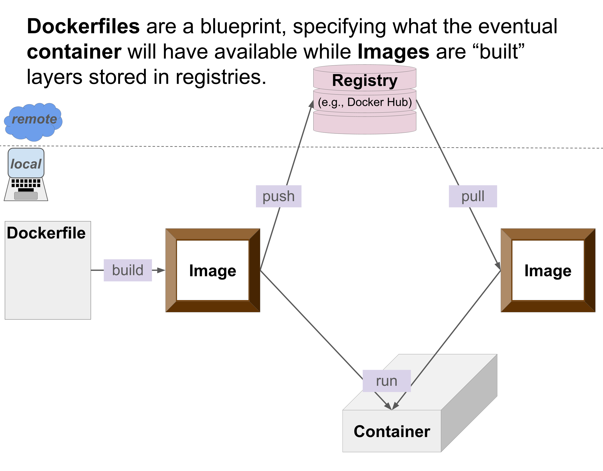
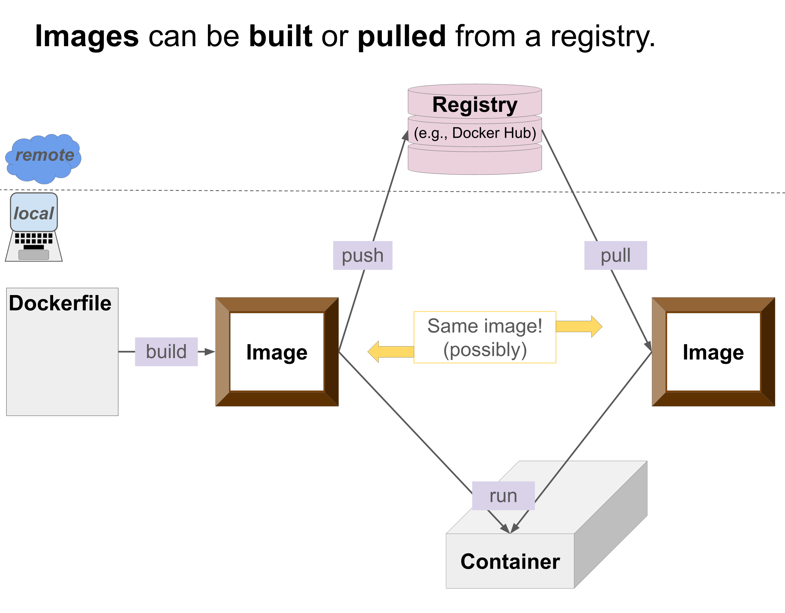
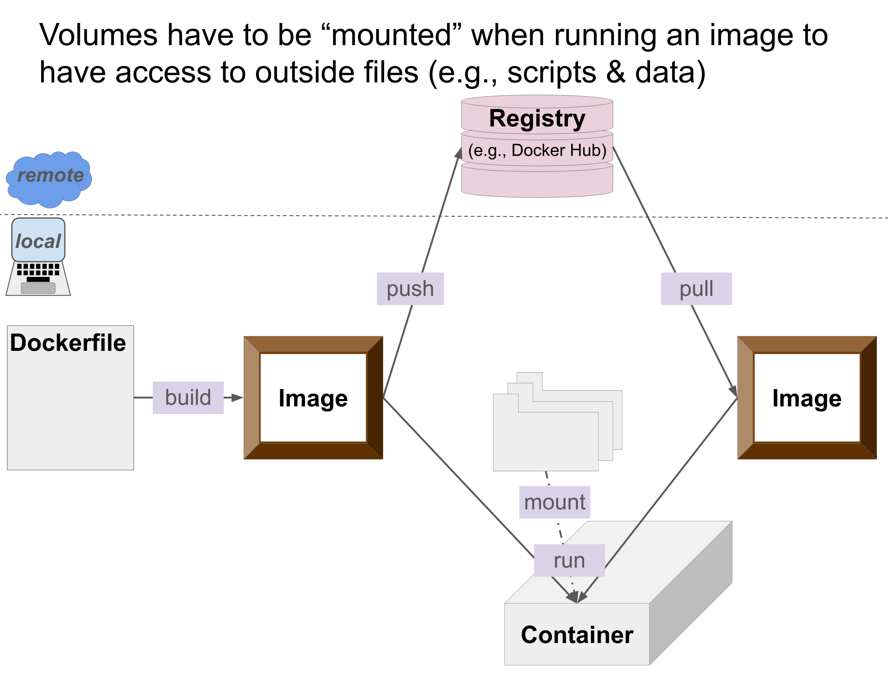
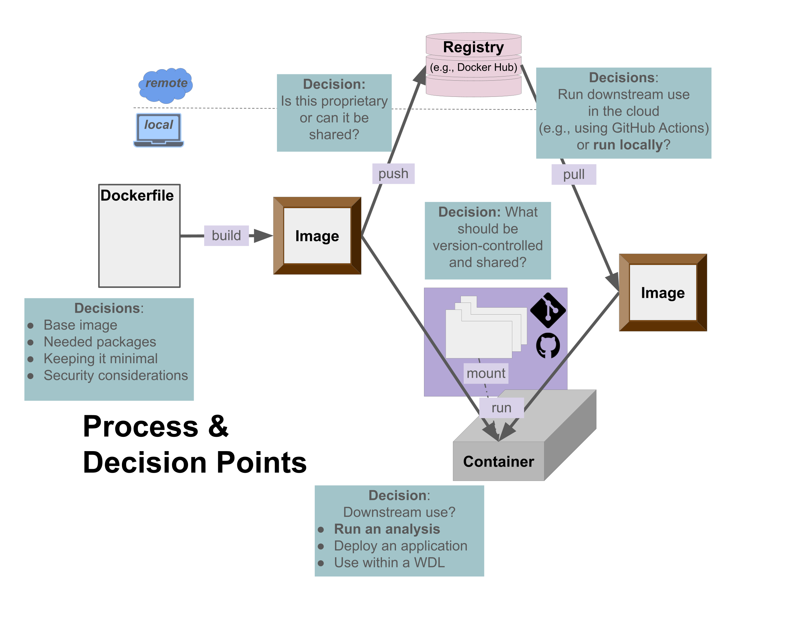
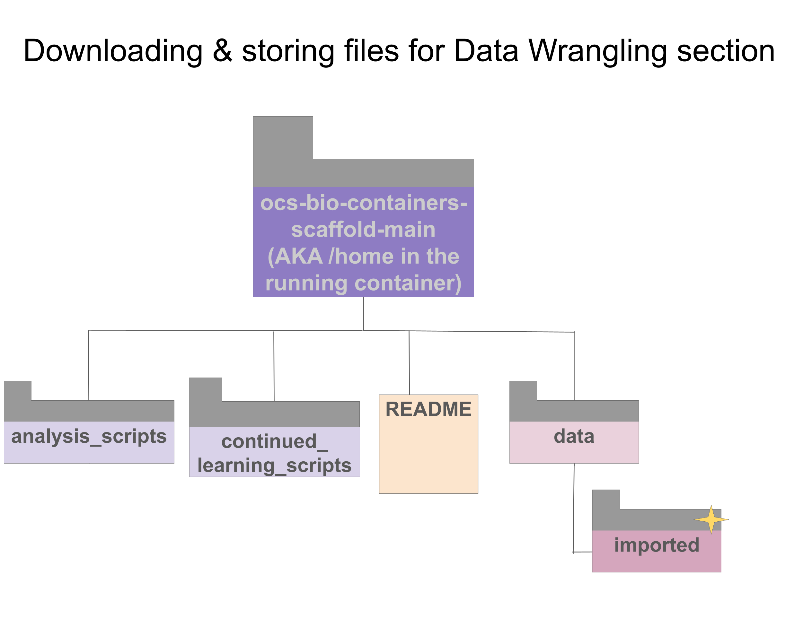
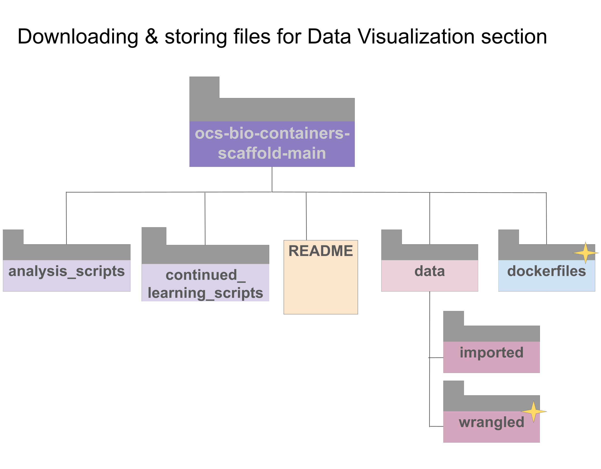
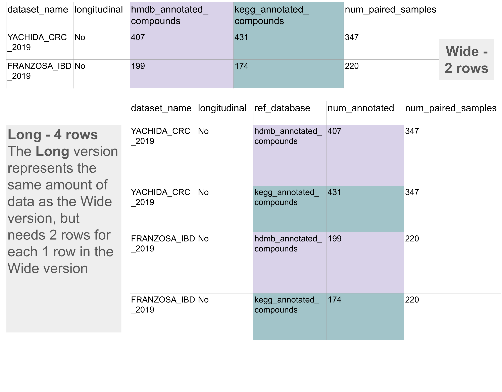
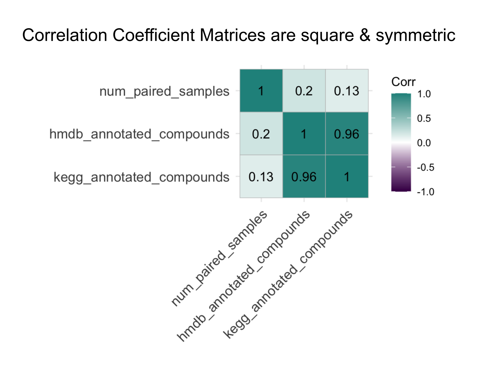

Biomedical Open Case Studies: Using containers for collaborative, reproducible research
Disclaimer
The purpose of the Open Case Studies project is to demonstrate the use of various data science methods, tools, and software in the context of messy, real-world data. A given case study does not cover all aspects of the research process, is not claiming to be the most appropriate way to analyze a given data set, and should not be used in the context of making policy or clinical decisions without external consultation from scientific experts or medical care professionals. In addition, due to size constraints, datasets used within a case study may be a subset of the original/full dataset.
License information
This work is licensed under the Creative Commons Attribution-NonCommercial 4.0 (CC BY-NC 4.0) United States License.
Funding information
This work is funded through the National Institutes of Health, specifically the National Institute of General Medical Sciences: Grant Number 1R25GM160622.
To cite this case study, please use:
Isaac, Kathryn J and Teichman, Sarah, and Thomas, Oshane and Wright, Carrie. (2026). https://github.com/opencasestudies/ocs-bio-containers/. Using containers for collaborative, reproducible research (Version v1.0.0).
GitHub repository
To access the GitHub repository for this case study see here: https://github.com/opencasestudies/ocs-bio-containers/
Keywords
- Keyword 1
- Keyword 2
- Keyword 3
- …Keyword n
Prerequisites
Prerequisites
This case study provides instructions for following along using either Docker Desktop or Docker through a Command Line Interface (CLI). If you are comfortable working with a command line interface, you do not need to install/use Docker Desktop. Note that you can still use command line within Docker Desktop and the application provides additional tools, documentation, and an AI assistant, Gordon.
However, if you are a beginner, or largely uncomfortable working with a command line interface, it is recommended that you follow along with this case study using Docker Desktop.
Throughout the case study, a tab structure will be used. By default instructions for using Docker Desktop will be shown. Click the “Docker through a CLI” tabs if you would prefer not to use Docker Desktop. Installation instructions are provided using this tab structure as well.
You will need the following installed:
- Docker Desktop (install for Windows, for Mac, or for Linux)
- Notepad, Sublime, Visual Studio Code or another text editor
To follow along with this case study, you’ll need the following installed:
- Docker Engine () Need to provide instructions
- Docker CLI () Need to provide instructions
- Have access to and familiarity with a local command line interface (CLI)
- Notepad, Sublime, Visual Studio Code, nano, vim, or another text editor
–
It will also be helpful to be have the following skills:
- ability to navigate file systems. Please use or review the Software Carpentry “Navigating Files and Directories” tutorial if needed.
- basic R skills (many introductory courses can be found online, including this one)
- familiarity with dplyr and ggplot2, or willingness to learn (these dplyr and ggplot2 cheatsheets may be helpful, as well as the original open case studies)
–
For optional, more extensive reproducibility activities, you will need the following:
- minimal Git and GitHub knowledge or experience (see this related case study for necessary skills)
- a GitHub account (see here to signup)
New to GitHub?
See this related case study for necessary skills to get started with GitHub: https://www.opencasestudies.org/ocs-bio-version-control
The following sections specifically will be the most helpful in order to get started with this case study:
- Sign up: https://www.opencasestudies.org/ocs-bio-version-control/#creating-a-github-account
- Installing GitHub Desktop: https://www.opencasestudies.org/ocs-bio-version-control/#installing-github-desktop
- Alternatively, Installing Git: https://www.opencasestudies.org/ocs-bio-version-control/#installing-git
- Connecting your account: https://www.opencasestudies.org/ocs-bio-version-control/#connecting-git-to-github
For following along with later steps in this containers case study, you may want to refer to the following sections:
- (Note that this containers case study will have you create a repository from a “Template repository”, a topic that the version control case study mentions, but does not specifically walk through.)
- Creating a local repository clone: https://www.opencasestudies.org/ocs-bio-version-control/#creating-a-local-clone-of-your-github-repository
- Project organization and typical files to track: https://www.opencasestudies.org/ocs-bio-version-control/#project-organization-with-git-and-github
- Tracking files with GitHub: https://www.opencasestudies.org/ocs-bio-version-control/#stage-commit-push
What is your preferred way to install Docker if not using Docker Desktop? The Docker documentation still recommends installing Docker Desktop and then just not using it.
To Do: Need to create a cheatsheet on installation and verification instructions for Docker
Motivation
In this case study, we ask you to imagine that you are working with a collaborator on a scientific project. You receive the following email with a request to help with making some data visualizations for revisions to a manuscript. The study described in the manuscript is a collaborative project spanning several teams. Therefore, each part of the analysis has a so that the team can easily share and support . Background on the context of the analysis will be provided later in the case study.

In addition to the background and visualization request, your collaborator sends you the information on how to access both the pre-existing container and the analysis script to get started with the task.
In this case study, we will introduce containers as a tool for increasing the reproducibility of a scientific analysis within a team project, describing why and how to use them to standardize computing environments. We will use to specify the environment used to create several data visualizations of a table describing samples within a curated from Muller, Algavi, and Borenstein (2022). You will learn how to use a pre-existing Docker container to run an existing analysis.
Container
A container is a defined packaging of code, dependencies, packages, etc. within an isolated environment supporting the deployment of applications or running of analyses.
You will learn how to further adapt the container to meet your needs by adding package(s) and extending the analysis. Additional topics that will be covered include:
- How to find and share container .
- How to a containing analysis scripts.
- How to explore output from an analysis performed within a container.
- How to save results from an analysis run in a container.
Main Question
Our main question(s)
- How does one use to improve the of their work? (Are containers always necessary?)
- How does one use a container and modify a container?
- What are and data and how can they be used together?
Learning Objectives
In this case study, we will use to specify and run our environments in order to create several data visualizations of a table describing samples within a curated .
The skills, methods, and concepts that students will be familiar with by the end of this case study are:
Data Science/Bioinformatics Learning Objectives:
- Discuss ways in which promotes within collaborative scientific research.
- Describe how containerization is one of several tools to support the process of increasing the reproducibility of scientific research.
- Employ multiple reproducibility best practices together within the context of containerization (e.g., a of scripts, sharing a container ).
- Evaluate what should or should not be included in a container.
- Identify contexts where containerization (potentially with Docker) is not appropriate or needed.
- Practice the containerization process to reproduce, extend, and share a data analysis and its results.
- Verify that results or outputs (e.g., messages in logs from analyses run in containers) match expectations.
Statistical Learning Objectives:
- Explain how is impacted by the number of samples in an analysis.
- Recognize the need and considerations for when utilizing multiple data sources.
- Describe how the number of observed is impacted by the number of samples in a dataset.
Biological/Topical Learning Objectives:
- List the value and potential applications of data collections.
- Explain the limitations and cautions associated with using a data collection for your own work.
- Relate the utility of pairing of and data for biological research.
- Build visualizations to communicate the relationship among variables in a table.
Context
What is the metabolome?
The is a collection of or low-molecular weight (containing carbon-hydrogen bonds) molecules found in a specific sample or organism. Large organic biomolecules in the cell are primarily categorized among four groups: (DNA or RNA), , , and (Cooper 2000). These categories represent large biomolecules () broadly responsible for cellular structure, energy storage, enzymatic catalysis, and genetic information storage and transmission. Metabolites may be by-products from, precursors, intermediates, or building blocks of the various macromolecules. They also include , , and other small organic molecules that don’t neatly relate to the larger classes of biomolecules (Karu et al. 2018).
Metabolites may be or depending on their origin. Endogenous metabolites originate from the organism or source of the sample while exogenous metabolites originate from outside of the organism / source of the sample. Metabolites may be classified as either or metabolites where primary metabolites are required for the life-cycle: growth, development, and reproduction; secondary metabolites are instead used for non-life cycle tasks such as communication/signaling or defense. Note that within the context of the , a “secondary metabolite” has an additional meaning besides ones that are used for non-life cycle tasks. Secondary metabolites may also refer to metabolites that are from the primary “host” system but are then re-metabolized by the microbiome (Liu et al. 2022). Additionally, metabolites may be water-soluble or water-insoluble, each requiring their own sample extraction techniques (Lu et al. 2017).
Metabolites are detected, identified, and quantified using , or by pairing compound separation through or with .
Add a figure with an example of a spectrum output
Resources for more details on NMR and mass spec
NMR
For more details on how NMR works, visit this resource from the University of Wyoming about the basics of NMR spectroscopy.
Also consider Marion (2013) for “An Introduction to Biological NMR Spectroscopy” from the Journal of Molecular & Cellular Proteomics.
Mass Spec
For more details on how mass spectrometry works, visit this resource from the Broad Institute explaining what mass spec is, this resource from Scripps Research about the basics as well a more thorough discussion on the relevant technologies or this resource from Michigan State University about the basics with an associated practice problem set.
Additional resources include Garg and Zubair (2026) and Son et al. (2024).
In human fecal samples, a mixture of metabolites would be expected – both endogenous and exogenous – due to physiology (endogenous), dietary intake (exogenous), and metabolism (considered exogenous due to the secondary metabolism of endogenous metabolites) (Liu et al. 2022). Classes of expected metabolites that will be observed include fatty acids (a lipid building block), bile acid (steroid derivatives synthesized from cholesterol), amino acids and protein derivatives, intermediates of carbohydrate metabolism, and undigested dietary sugars (Karu et al. 2018).
Historically, the “low-molecular weight” part of the definition of metabolites has been thresholded with a cutoff for molecules: <1500 in . A recent article (Moreno-Ulloa 2026) proposed a re-definition of metabolites that no longer restricts their identity based on size. However, this definition does not seem to be a widely accepted by the field at this time.
To aide the downstream data processing (because of the vast number of metabolites that have been discovered and studied, their possible locations, and their many associations with different , , and or disease implications), dedicated with known metabolites and related info were developed and are maintained by the scientific community. Some of these databases provide specialized metabolite information across a range of organisms where these metabolites would be found such as spectra from NMR or MS experiments (e.g., MassBank of North America or MoNA) (“MassBank of North America (MoNA) - PubChem Data Source,” n.d.), names, structural, or chemical information about a specific class of metabolite (e.g., LIPID MAPS) (Conroy et al. 2024), or metabolic pathways/networks (e.g., Kyoto Encyclopedia of Genes and Genomes or ) (Kanehisa and Goto 2000; Kanehisa et al. 2025), while others provide a more comprehensive, but organism-specific databases like the Human Metabolome Database () (Wishart et al. 2009).
From the 2009 paper introducing HMDB (Wishart et al. 2009), the database is described in the following way:
HMDB is … [an] organism-specific metabolomics database …. It contains spectroscopic, quantitative, analytic and molecular-scale information about human metabolites, their associated enzymes or transporters, their abundance and disease-related properties.
The metabolome of an individual may change over time. Therefore, some research looks at the metabolome of the same research participants over a course of time. This is called a study. Research participants within the same study (whether it is longitudinal or not) are termed a .
What are different applications of metabolomics within the scientific field>
Some applications:
- Biomarker identification
- Drug discovery or development
- Clinical Toxicology
- Nutritional studies
- Quantitative phenotyping
- Interpretation and understanding of complex biological processes
What is a curated data resource?
Muller, Algavi, and Borenstein (2022) introduced and explored a curated . Simply, this means a collection of datasets that have been gathered or curated by a group for secondary use within the scientific field. This often goes further than just collecting references of different studies who have made their data available and includes reprocessing the datasets from those studies to make sure that they have been handled in the same way and can be used together in future work. In this case, the researchers from Muller, Algavi, and Borenstein (2022), after identifying studies to include in the data resource had to
- Download the data associated with each study.
- Link the paired data (microbiome and metabolome) for each sample within each study.
- Jointly reprocess all raw data from across the studies
- Annotate microbiome taxons and metabolite molecules according to relevant databases (e.g., KEGG and HMDB)
Recall that the set of samples from a single study is typically referred to as being from a cohort. In a curated data resource, the different cohorts are pooled together.
Add a figure that shows this idea of cohorts being pooled together.
What are possible uses of a data resource?
Curated data resources are useful for a variety of tasks such as:
- Working with more data for greater
- Perform a to compare results and associations among datasets (See the Version Control case study for an expanded discussion on meta-analyses.)
- tools
- Comparing findings from an analysis to a different dataset (e.g., evaluating the and of the research) (Schloss 2018)
The need for containerization
Data analysis, especially analysis of large data, relies on computers and the software tools installed on those computers. Depending on the computational needs of an analysis or a researcher’s typical work, that computer or work station may be a personal computer / laptop (Operating system: Microsoft Windows, Apple MacOS, Google ChromeOS, or Linux), a desktop, a Graphics Processing Unit (GPU) server, shared computing resources such as clusters or supercomputers, or the cloud (Amazon Web Services, Google Cloud Platform, Microsoft Azure). (Wright, n.d.).
Different researchers, especially those located at different institutions, those at different career stages, and those who have different research focuses have different (potentially differences in operating systems, software, software versions, etc.). Beyond differences in operating systems, different institutions and the IT departments that manage the institution’s computers may have specific setups and guidelines shaping the available software and computing environment for computers at the institution. Individuals with different needs will install and update software differentially. Even team members within the same lab will have different computing environments. Overtime, a single researcher’s computer will evolve as well. Software and operating systems will be updated (sometimes automatically rather than manually) and new software, tools, or applications will be installed. Basically, computers are like snowflakes – they are unique when compared to other computers. They make have similarities, but overall computers are their own unique entity.

The differences between computers can be problematic for performing and sharing reproducible research (Schloss 2018; Moreau, Wiebels, and Boettiger 2023). Several examples exist in the literature where different versions of software lead to different results when analyzing the same data (Beaulieu-Jones and Greene 2017; Filip et al. 2022).
Reproducibility considerations
Reproducible research is where the same methods (code, script, implementation based on description, etc.) can be used on the same data or within the same experimental system by a new researcher to recapitulate the results or findings of the original researcher.
Note that just because a research result is reproducible doesn’t mean that it’s correct or valid. Research can be reproducibly wrong. However, reproducibility is always an important step towards useful, valid, and generalizable scientific discovery.
What is reproducible research within the greater context of scientific discovery?
Repeatability: Same researcher using the original data and process to repeat the same result.
Reproducibility: New researcher using the original data and process to repeat the same result.
Replicability: New researcher using new data with the original process to repeat the same result.
Extensibility: New researcher using the original data and process but expanding the method to repeat the same result but also produce an extension of the result.

As described in Schloss (2018), preferably a research result can go beyond replicability and also be robust and generalizable.
Generalizability: Using different methods and different data but producing the same overall result.
Robustness: Using different methods but the same data and producing the same overall result.
One way people have tried to get around this challenge is reporting the exact versions of all software that were used. This may at times be sufficient, but other times more precision is necessary. Even if given a list the exact versions of all software and packages or libraries that were previously used, a researcher would need to install any new software and update or downgrade any software they’ve previously installed. Some software requires special dependencies that may not be known to be required until attempting to install a specific package or library and these dependencies may be especially difficult to install due to conflicting, missing, or mismatched version requirements among other software that is already installed. Teams may have a shared computing resource (like an institutional HPC), but even in that case different users have different software and configurations. Geographically dispersed teams can’t realistically mail a laptop to each other to have a standardized computing environment.
Therefore, are often the solution used to standardize the computing environment within a team. Containers provide a standardized computing environment for everyone using it no matter what the software landscape of their personal laptop or workstation looks like.

Introduction to Containers
Before we start to address your project with Collab O. Rator, we will provide an introduction to with . In this section, you will learn more about what containers are, why they are useful, and when they may be unnecessary. In additional you will learn about different software tools or technologies that support containerization, when certain technologies are more appropriate to use, as well as how to find, share, and work with containers. Towards the end of this section we will return to the - data collection project.
What is a container?
A container is an active computing environment that is isolated from the rest of the user’s system. Containers are the operational ending point of the containerization process. The containerization process also involves Dockerfiles and images (upstream of containers) which define and instantiate or produce containers.
Images are a frozen snapshot of what the computing environment will be in a container or what will be in the running container, while a container is the isolated, specified computing environment that you can work in. This is like the Mary Poppins scene where Mary Poppins, Bert, and the kids are looking at chalk drawings (images) and jump into one which has its own isolated environment (container).

Containers and the containerization process are supported by different tools such as Docker, Podman, Apptainer, and Singularity. Docker is one of the industry-standard and most popular of the tools and primarily will be the one discussed and utilized within this case study. However, Docker is not always the appropriate tool to use in every context.
We will discuss the containerization process that leads to containers, starting at the beginning:
Dockerfiles
Dockerfiles are the starting point in the containerization process. Dockerfiles are text-based scripts that contain the commands that will be used to provision the eventual container computing environment. These commands will be evaluated sequentially one after the other when the Dockerfile is “built” to produce an image. In this way, Dockerfiles are a blueprint, specifying what the eventual container will have available in its computing environment for the user. Dockerfiles are small and relatively easy to store and read. Because they are text-based, they can be version-controlled. The sorts of commands that will be in Dockerfiles include specifying a base image, which dependencies or software packages should be installed, a file structure to set up, defining persistent environment variables, etc.

For other tools (e.g., Singularity or Apptainer) the equivalent of these files are instead called definition files.
Building
“Build” is the verb that is used to move from a Dockerfile to an image within the containerization process. Dockerfiles are built to produce images. Images are built in a way that the resulting containers will be able to run on specific platforms or architectures (e.g., hardware + operating system: linux or windows). Multi-platform builds allow for even greater flexibility in who can use a container no matter what hardware + operating system they have. For example, newer Macs have a different processor chip (Apple silicon) than older macs (Intel) and may have more difficulty building, pulling, or running older images. See this description about known issues for ways around this.
Best practices for writing a Dockerfile to optimize the building process are provided by Docker documentation. Many of these will be discussed later in the Data Exploration section.
Images
Images are layered, frozen snapshots that contain all of the necessary files, configurations, package libraries, etc that are necessary to produce the active running container. An image is not an active environment, but rather an intermediate step in the containerization process. Each layer is related to a command from the Dockerfile: adding or modifying to what the container will contain. Once images are created they are immutable (e.g., cannot be changed or modified). If you need something to be changed, you would have to create a new image. You may want to use the same image name but a different “tag” if it is a small change or updated version of an old/no longer necessary image. Common tags include “main”, “latest”, “dev”, “v#”, etc. Because images are immutable and layered, you can use images as bases for other images, starting with an existing image and adding a package or set of packages on top of it (e.g., the base image that is specified in the Dockerfile). Images are much larger than Dockerfiles (often Gigabytes (GB) in size) because they contain the actual software libraries. Also images are not as readable as a Dockerfile, but images are the main way that containers are shared.
Because images are the main way that containers are shared and they tend to be large already, it’s an important best practice when working with containers to keep a container “minimal” – being careful to include only what you need. Larger images require more storage space, may require more memory, take longer to “build” and “pull” (slowing down a project), and pose greater security vulnerabilities because they include more. Smaller images are also easier to debug and maintain.
Picking Base Images and keeping an image “minimal”
Picking the right base image when writing a Dockerfile requires a balance: finding one that has the packages/ecosystem you need while not including too much extraneous stuff you don’t need (e.g., compatibility vs size).
When defining what your container should look like, there are two important considerations as discussed in the ITN Containers for Scientists course:
- Start with a small base image that provides the ecosystem you need (e.g., Python or R) and add only the fewest number of packages that you need for your specific project.
- If a project has a lot of steps or would need a very large image, you could split the project into smaller units and have a docker image for each segment of the project. This is especially useful if the project is utilizing workflows (e.g., WDL, Snakemake) where different containers can be specified for different steps.
Some base images on Docker Hub (such as Python) provide slim or alpine options that are scaled down in what they include and are helpful when size is a major concern. However, they may also cause compatibility issues if you need to install and use some additional packages.

Registries
Images can be stored within your local file system but you might want to free up space (due to their large size) or share them with team members, collaborators, another machine you use, or publicly because you are publishing a study. This is where registries are useful. A registry is a centralized location for storing and sharing container images. Docker Hub is a common, but not the only, registry used to share Docker images. Registries like Docker Hub are useful for finding base images or full images that can be used as is for your particular use case.

Images can be “pushed” or “pulled” from a registry. If an image has multiple tags or are built for multiple architectures, the related images (with different tags or built for different architectures) will be stored in a repository within the registry. If an image contains proprietary information, it likely shouldn’t be shared in a public registry like Docker Hub.
Add push and pull to the glossary as well as a dictionary box.
Reproducibility considerations
An image that is pulled from a registry will match the image that was pushed to the registry. If after some time (after pushing the image to the registry) an image is built from the Dockerfile that was used to build the original image (that was pushed to the registry), these images may no longer match. Unless versions are explicitly controlled within the Dockerfile, versions of dependencies or packages may have changes or may no longer be available. Also, you may be using different options or parameters to build the Docker image than were originally used. Small changes like this can impact how reproducible a container actually is in practice and is a reason why Images are typically stored in registries to share.
Running
“Run” is the verb that is used to move from an image to a container within the containerization process. Images are run to create or launch a container – the active, usable computing environment. Once a container is running, files from your system cannot be added to the container because the container is isolated. You can likely use wget to fetch files from the internet, but those files will not be available to others using the same image to run another version of the container unless they fetch them as well.
Mounting
When you “run” an image to create a container you can mount a volume of your local files so that files from your system are available to the container. These files may be a analysis scripts, data files, package that you are writing/developing. Any changes made to those files will still be available to you once the container is no longer running.

If your institution has strict security configurations set on your machine (possibly due to sensitive data), you may not be able to mount volumes when running a Docker container. This is because Docker as a tool requires root-level permissions and this goes against the principle of least privilege, an important consideration for data management.
Alternatives for machines with strict security configurations
- Podman may be able to be used and has many similarities to Docker while more closely aligning with the principle of least privilege.
- Docker can work with singularity, enabling you to still use Docker and Docker containers without needing root access.
In summary, Dockerfiles are text-based scripts that contain commands defining how an image will be built. Dockerfiles serve as a blueprint or the starting point of the containerization process. Dockerfiles are built to produce images. Images are a frozen, layered snapshot of what the container will be, containing the files for the system libraries. Images are much larger than Dockerfiles and less readable. They are the most common way to share a container and are often stored in registries (like Docker Hub). Images are run to create containers and file systems or volumes may be mounted during the run process so that isolated containers have access to scripts or data and any updates to those are available outside of the container as well.
Containerization Analogies
The containerization process can be thought of like working in a kitchen for dinner service or a holiday meal.
![Diagram showing how working in a kitchen can be an analogy for the containerization process. Dockerfiles specify the recipe repertoire and kitchen organization standards while building is like the preparation process resulting in standardized resources, ready for active cooking, but not actively being used - an image. Running the image results in a container or an active kitchen where cooking is happening. It is like turning on the burner. In the running process you may mount a volume of scripts and data or in the kitchen this would be specific recipes. Finally, container clean up is removing the heat and resetting the environment by storing ingredients and cleaning up the space.](index_files/figure-html//1EFnuBBFlqjod7S1OlOoj_9-29nPO3ZhL6iJ-Pf8xzpg_g3f88b06ed70_0_0.png)
In the kitchen you have a recipe or a set of recipes each listing the necessary ingredients to stock as well as how much of each ingredient is needed and if there’s any special preparation or considerations for an ingredient (e.g., chopping or peeling). Recipes also provide detailed instructions for the environment (desired pans, cooking temperature, time). Additionally, a kitchen has specific locations for specific tools, pans, and utensils – perhaps there’s a map or binder specifying where things are located and how they are to be cleaned and stored. All of these together specify how the kitchen should be provisioned.
The Dockerfile is like a recipe and kitchen binder specifying what dependencies, packages, and environmental variables (ingredients) are needed, in what order, and what the environment needs to look like. While a Dockerfile contains a layered, step-by-step definition of the computing environment, it doesn’t contain a step-by-step definition of how a specific analysis will utilize the computing environment.
Working in a kitchen, often the area and ingredients may be prepped before any combining, cooking, or baking actually happens. Pans, utensils, and tools are all cleaned and stored in specific, known locations. Ingredients that need peeled, chopped, or some other special preparation are prepared in those ways. This preparation allows for a more efficient or easier combination of ingredients within the cooking process. Everything is prepared (according to kitchen station expectations and the instructions for ingredients in the recipe), just sitting at the ready, but not actively being used. This is termed “mise en place” (pronunciation: /ˌmiz ɑn ˈplɑs/ or meez ahn PLAHSS).
The “build” process (Dockerfile –> image) is the preparation of the environment and ingredients: the cleaning, stocking, chopping, dicing, peeling, measuring, etc. which leads to the docker image where everything is in a static, read-only, prepared state. The docker image is like “mise en place”.
The step-by-step instructions for specific dishes, and their utilization of specific ingredients may be needed as well (analysis scripts). Perhaps unusual ingredients (data) for special dishes are needed. These are not part of the building process, but instead are brought into the kitchen (container) once everything else is ready. The recipes, kitchen station and prep guidelines (Dockerfile), and prepared environment, and ingredients (image) provide a static and standardized setup – one that can be used by any set of cooks or chefs. The mounted volume within a running container brings in the flexibility to use the static and standardized setup for your specific needs in your specific way.
Once the kitchen is ready, they fire up a stove top, heat an oven, or combine ingredients that will work together in a bowl. With the addition of heat or mixing of ingredients, the cooking process itself begins. Everything that was defined in the recipe or kitchen station instructions is at the kitchen’s disposal. It’s too late to go get different ingredients or supplies.
The “run” process (image –> container) is like supplying the heat – creating the environment where the cooking and combining of ingredients can happen – the container. In the running container or environment, each of the ingredients (packages) are at your disposal, ready to use. Your analysis scripts and specific data will be incorporated here by mounting a volume during the “run” process.
Within the running container, you use the packages together with any data or analysis scripts to perform an analysis or provision a tool. Everything defined in the Dockerfile is at your disposal to use in the running container. And the running container is isolated from the rest of your computer – so only what is defined in the Dockerfile is available unless you’ve mounted a volume to bring in specific data and scripts.
The eventual meals produced by the kitchen are like the finished product: a tool, analysis, result, etc. that can be shared. And finally, as with any kitchen endeavour – there has to be a clean up. Perhaps a container is paused or stopped (e.g., the heat is turned off but the pan is still available on the stove). Then eventually the container is removed – (e.g., dishes are cleared, cleaned, and put away). Images may also be removed to save space – like clearing out or storing unused ingredients.
In a kitchen, you may make multiple courses for a meal: an appetizer, the main course, and dessert. Each of these have their own process: own station in a professional kitchen, own set of recipes, own prep needs, and own tool needs. However, the end product is the whole meal. In a similar way, an analysis may have multiple parts each supported by its own container, all working together to produce the overall end product.
The containerization process can be thought of like hotels.
- Dockerfile: The blueprint for the room plus the instructions for cleaning/resetting it in between guests.
- Build: Cleaning/resetting the room in between guests.
- Image: The room cleaned and prepped for check-in. It’s identical every time you look at it.
- Run: Check-in/ handing the room key to the guest.
- Container: The active occupied room during a specific guest’s stay.
- Note each room is isolated from the others and the amenities that can be shared by multiple rooms can be thought of like a mounted volume.
- Cleanup steps: checking out.
- Different hotel chains will look different and may provide different amenities (base images), but they will all have similarities in providing a bed, bathroom, etc. In a similar way containers will have different packages and you bring in different date or scripts when mounting a volume, but they all are similar in that they provide an isolated environment.
The containerization process can be thought of like building with LEGOs.
- Dockerfile: Instruction booklet that comes with a set
- Build: LEGO assembly line: gathering the necessary pieces, packing them into sealed bags, putting them and the manual (what’s necessary for the set) in a sealed box
- Registry: Lego.com or a LEGO store
- Image: The sealed box for the set with pieces in bags and booklet included.
- Run: Opening the box and dumping the pieces on the table.
- Container: Actively putting the set together and playing with it.
- Different sets will have different things available the same way that different containers will have different things available.
- Mounting a volume: bringing LEGOs that you have outside of the set into the act of putting the set together to modify it or make it your own.
Will embed a survey to ask learners to suggest other analogies.
Why containers?
As previously described, containers are useful for standardizing the computing environment within a team or between different machines (e.g., local laptop and institutional HPC or cloud computing environment).
Containers are not always necessary. The complexity of setting up, sharing, and documenting containers may not be worth what you gain in regards to reproducibility. In such cases reporting software used and their versions is often enough. Such cases include:
- If you’re working on an analysis without specialized software. Specialized software is software that may be hard to install because of dependencies or software that you wouldn’t expect many people in your field to work with.
- If you’re not working within a large collaborative team.
- If your analysis is tied to a single machine or static compute environment, and won’t need to move between systems or machines.
- If the computing platform already supports analyses through the use of containers (e.g., The NHGRI AnVIL Platform), then you may not need to set up your own container if theirs already provides the software you need.
In cases where you don’t need a container, consider printing out Session Info or setting up an renv to more transparently report your reproducible environments for your analyses.
When is a container especially useful?
Containers are especially useful in the following cases:
- If you need to move an analysis to another machine or environment like an HPC or the cloud.
- If a collaborative team is working on a large analysis within a workflow (e.g., WDL, Snakemake) or in different environments.
- If a collaborative team is having difficulty replicating results within the team.
- If a team wants to both replicate and extend an analysis.
- If there are many dependencies that could cause nightmares.
If you need to move an analysis to another machine or environment like an HPC, it is important to know which containerization tool is the most appropriate. Many institutional HPCs do not allow Docker use because of its required root-level execution. This would give users higher permissions than they generally need, acting counter to the principle of least privilege, and creating unnecessary security vulnerabilities. Singularity and Apptainer are more commonly supported / used by institutional HPCs. When working on the cloud, Kubernetes is a common tool to orchestrate container deployment and manage large-scale Docker container infrastructure.
What are general use cases for containers?
There are several different (downstream) use cases for containers:
- Supporting an analysis: Due to the clear and consistent definition and packaging of what is in a container, the ability to share it among a team or across platforms (portability), and the ease with which it can be integrated into workflows, containers are useful for supporting a computational analysis. Containers are especially useful in the team environment for supporting an analysis when it comes to debugging and reproducibility. Team members may find that analyses have different results if they do not have standardized software versions and computing environments.
- Sandboxed software evaluation: Due to the isolation of the container environment, containers provide an isolated sandbox where software can be tested or evaluated without risking the security of the rest of the system or being impacted by other software (Tommaso et al. 2015).
- Deploying an app: Containers support deploying applications because of their consistency, portability, and isolation. The application’s code and dependencies are all packaged together and will run the same way every time no matter what servers or cloud services the app is on (portability). If there’s an error, bug, or crash it won’t impact other apps on the server because of the app’s isolated environment.
When trying to decide if containers are useful for you and your work, consider which of these use cases you need. If your use case is supporting an analysis and you don’t need the ability to share and integrate with workflows, a container may be unnecessary. The first of these use cases (supporting an analysis) is the context for this case study.
What are the first steps for working with a container?
If a container is necessary for you work, the first steps largely depend on how the container will be used and what stage the project is in. For a project that is starting from the beginning, you may need to develop the container from the beginning by defining a Dockerfile. This would include choosing a base image and specifying dependencies and the actual packages of interest. Alternatively, you may be able to find a container in a registry that meets your needs already because it was referenced in a published paper. As the project evolves, you may have to further modify the container so that it contains more or different packages than you expected. Be sure to remove any unnecessary packages that you didn’t actually need. For projects that are more mature, a container may already be largely defined / available. In such cases a team member or collaborator may have to give you access instructions.
The last of these scenarios (already specified container) is the context for this case study.
How do you work with a container?
Using Docker through Docker Desktop vs through a Command Line Interface (CLI) has some trade-offs. Beginners may find it easier to work within Docker Desktop because of its Graphical User Interface (GUI): users will be able to see lists of images and containers, buttons to control container actions (such as running or stopping), lists of files within mounted volumes, do everything within the GUI without having to switch between windows (Explore what the Docker Desktop GUI has.). Docker Desktop also has extensive documentation about working with the GUI. However, Docker Desktop does not provide tab completion by default, and once you enable it, it doesn’t work quite in the way you would expect it to while interacting with and running files in the “Exec” tab. Additionally, Docker Desktop can be a (manageable) resource drain on a system, utilizing a large amount of memory and battery.
Depending on how a container is defined / setup, it may install an interactive Integrated Development Environment (IDE), such that you can work within an IDE (e.g., RStudio/Positron, Visual Studio Code, Jupyter Notebooks, etc.) within a running container. Docker can also be used with workflows (e.g., WDL, Snakemake, GitHub Actions). Using containers with GitHub Actions or within the cloud moves where you run the downstream interaction from your local machine to a remote location.
Using Docker through Docker Desktop or through a CLI (locally) will be the context of this case study.
Summary
Beyond the decision of whether containers are the right choice for you and your downstream use/work, working within the containerization process requires decisions: what you need available in your container; what can be shared and where; what files you’ll need to mount (if any) when you run the container; whether you’re running the container locally or remotely.

What are the data?
The data comes from Table 1 in Muller, Algavi, and Borenstein (2022). Table 1 describes the curated gut - datasets that this study aggregated in order to curate a resource for the research community. This table is a 14 row 7 column table with columns showing
- the name of each dataset
- which reference in the study relates to that data
- a brief description of the within that study
- the number of samples with paired fecal microbiome-metabolome data within that cohort
- whether the study contained data
- the number of annotated compounds
- the number of annotated compounds
Each row in the table is providing data for that source dataset itself. Figure 1 in Muller, Algavi, and Borenstein (2022) provides more information on the overlap between datasets (e.g., in how many datasets were observed HMDB annotated present).
![Table 1 from Muller et al 2022. Table 1 describes the curated gut microbiome-metabolome datasets that this study collected and analyzed as part of the meta-analysis. This table is a 14 row 7 column table with columns showing the name of each dataset, which reference in the study relates to that data, a brief description of the cohort within that study, the number of samples with paired data within that cohort, whether the study utilized longitudinal data, as well as the number of HMDB annotated compounds and finally the number of KEGG annotated compounds in each study.](index_files/figure-html//1EFnuBBFlqjod7S1OlOoj_9-29nPO3ZhL6iJ-Pf8xzpg_g3f5db0d7ede_0_25.png)
After using tabulapdf to extract the table from the PDF (see the Data Import section) and some basic wrangling with tidyverse (see the Data Wrangling section), we will extract a tidy dataframe with all of the columns displayed in the original table, but those boxed in purple and listed below are the most important for our visualization task (as outlined in Collab O. Rator’s email).

| Variable | Details |
|---|---|
dataset_name |
A character/string identifying the dataset (often containing author, studied illness, and year of the study). |
num_paired_samples |
The number of samples within the dataset that have paired fecal microbiome-metabolome data. |
longitudinal |
A character/string reporting whether that dataset has longitudinal data (“Yes” or “No”). |
hmdb_annotated_compounds |
The number of metabolites that were identified within that dataset and annotated with the Human Metabolome Database (HMDB) (Wishart et al. 2009). |
kegg_annotated_compounds |
The number of metabolites that were identified within that dataset and annotated with Kyoto Encyclopedia of Genes and Genomes (KEGG) (Kanehisa and Goto 2000; Kanehisa et al. 2025). |
Limitations
There are some important considerations regarding this data analysis to keep in mind:
This case study specifically uses the technology to and run analyses within these isolated environments, on a local machine.
Limitations regarding containerization and the scope of this case study:
This case study does not describe how to:
- develop containers from the ground up
- use containers within a workflow using tools like Nextflow or Workflow Description Language (WDL)
- use containers to support a remote analysis (e.g., in the cloud)
- use containers to deploy or support an application
- use technologies other than Docker such as Apptainer or Singularity
Docker is a widely used tool for . However, it is not the most appropriate tool for all use cases and within all contexts. For example, often utilizes Apptainer due to its need of fewer user privileges (e.g., greater security). As a software tool, the long-term availability of Docker is not guaranteed. Containerization and the principles discussed within this case study will remain integral to reproducible research especially for dispersed teams. However, the specific technologies used to implement these principles may change over time and within different contexts.
Limitations regarding the data analysis and using aggregated data:
This case study focuses on practicing best practices in using containers to support reproducible and extensible scientific analyses. To support this goal, the example analysis is a straightforward visualization of narrow scope data. There could be additional context and characteristics (e.g., quality) about the data that are not considered or visualized within this analysis.
In addition, the harmonization of aggregated data requires careful consideration to ensure that data from multiple, different sources is both compatible and comparable (Cheng et al. 2024). Steps involved in include mapping related variables across datasets, adjusting scales, units, or formats for proper comparison, and reducing bias due to differences in data collection. Harmonization is not performed within this case study. Typically, are synthesizing summarized information rather than aggregating the underlying, raw data (Cheng et al. 2024). If using this curated resource to aggregate the underlying data, carefully consider what data harmonization may be appropriate (Nan et al. 2022).
Ethical Considerations
There are some important ethical considerations when working with containerization, as well as when working with clinical/health related data. Additional ethical considerations are relevant when working within a collaborative team environment and with secondary source data (data collected by others).
Containerization and clinical/health data considerations:
- When defining and sharing a container , make sure to never include (PII) or (PHI).
- Even if you are sharing a or image using a private repository or in private communication within a team setting, do not include PII or PHI.
- Data that is considered PII or PHI includes names, dates of birth, contact information, account or health plan numbers, IP addresses, and medical records. You can read more about PII and PHI and ethical data handling practices in this course with broader information regarding proactive and ethical data management and sharing can be found in this course.
- Container images should be minimal and non-interactive (e.g., able to install without user interaction).
- In general, do not include any data (even if it’s not PHI or PII) within an image that you share (ensuring a minimal image).
- Remove unnecessary packages or dependencies (ensuring a minimal image).
- Avoid adding software like
gitthat would require user credentials or authentication to install or setup (ensuring a minimal, non-interactive image). - Do not include any credentials within the definition of a container image (ensuring a minimal, secure image).
- Only use container images from known and verified sources.
- While images provide a static snapshot of a , the security or health of a container image isn’t necessarily static and may need to be maintained over time.
- Only use specific technology containers within the appropriate contexts (e.g., do not use unless explicitly allowed/supported by the institution). Certain containerization tools are not as consistent with the principle of least privilege as others (e.g., Docker is not as consistent with these principles as Singularity / Apptainer, and Podman).
- Use of open-source software that is broadly accessible is a part of ensuring findable, accessible, interoperable, and reusable (FAIR) science (Wilkinson et al. 2016; Barker et al. 2022). Docker is consistent with these principles because it is a partially open-source software that is free to use for individuals and small organizations. of analysis software and depositing it in repositories further aligns with these principles by making tools and analyses more accessible and transparent to others.
- Keep comprehensive documentation for scientific projects regarding sources and handling of data as well as steps in the analysis process. Further, be transparent, sharing records of analyses. Containerization is just a part of reproducible science (Sandve et al. 2013).
Collaborative team considerations:
- For projects performed within large, collaborative teams performing transparent science can be extra challenging. In addition, properly crediting contributions from team members may be difficult. Large teams may also struggle to utilize resources efficiently. Containerization offers a tool for large teams to combat this efficiency struggle, ensuring that all team members can access the same computing environment in order to reproduce, validate, or extend analyses. For more details about ethical considerations for science performed in large team settings consider Petersen, Pavlidis, and Semendeferi (2014).
Use of secondary and/or clinical/health data considerations:
- Use of (data collected originally by others), may need to be studied to ensure that researchers understand the variables within the data. Especially if aggregating multiple secondary sources of data, special considerations may be necessary to ensure that the data is being combined in comparable and compatible ways (Cheng et al. 2024).
- Use of secondary data, especially underlying (e.g., from patients or research participants) requires consideration on how that data was collected and shared and the consent of participants (Sterling 2011).
Packages and Setup
Before we get into fetching , creating , and running analyses, we want to describe the R packages that we’ll use in this case study, or that are used within the analysis scripts for the project with Collab O. Rator.
| Package | Use |
|---|---|
| here | Constructs paths within project |
| tabulapdf | Extract data from a PDF |
| readr | Read and write rectangular data (like .csv, .tsv, etc.) |
| tidyverse | Data wrangling |
| ggplot2 | Visualize data |
| patchwork | Combining multiple plots |
Loading the tidyverse loads several specialized packages to support data wrangling such as stringr (used to work with strings) and dplyr (used to wrangle, transform, and summarize tabular data like data frames). You can think of the tidyverse as providing a universe of related R packages. Rather than using library(...) multiple times to call each package, we can call library(tidyverse) once to load all of them. You may still want to load a package explicitly even if it’s packaged within the tidyverse for greater clarity. This posit forum thread provides some relevant points about the topic. Also note that the %>% (pipe) is loaded thanks to the tidyverse, dplyr, or magrittr packages. Load any of those packages and you’ll have access to it.
The first time we use a function, we will use the :: to indicate which package we are using. Unless we have overlapping function names, this is not necessary, but we will include it here to be informative about where the functions we will use come from.
tabulapdf is an example of a package that you may want to use a container for because of dependencies. tabulapdf requires Java which you may or may not have installed in your system. Though dependency needs can get much more complex.
This case study is focusing on how to work with containers while performing a data analysis (the project from Collab O. Rator described earlier in the Motivation section). Therefore, every subsequent section will have two portions:
- Container Infrastructure Activities: Exploring container specific concepts and performing containerization tasks to support the project.
- Container Application Activities: Working with data with the container (whose infrastructure you’ve set up by doing the Container Infrastructure Activities).
| Portion of section | Description of activity |
|---|---|
| Container Infrastructure | “Importing” a container image from Docker Hub as well as retrieving analysis scripts from GitHub; then running the image while mounting the volume with the analysis scripts. |
| Container Application | Using the running container (retrieved in the previous portion of Data Import) to “import” the data from the PDF version of Table 1 of the paper. |
| Portion of section | Description of activity |
|---|---|
| Container Infrastructure | “Exploring” the Dockerfile of the container image retrieved from Docker Hub in the Data Import section. |
| Container Application | “Exploring” the raw data which was retrieved from the PDF version of Table 1 of the paper in the Data Import section. We will discuss how containers can be a part of this. |
| Portion of section | Description of activity |
|---|---|
| Container Application | Using the running container, “wrangling” the raw data that was retrieved and explored in previous sections according to what was observed in the Data Exploration section. |
| Container Infrastructure | Wrangling the Dockerfile for the container image to add a package that will help with the Data Visualization task. |
| Portion of section | Description of activity |
|---|---|
| Container Infrastructure | Building the modified Dockerfile from the Data Wrangling section, running the image while mounting the volume with the analysis scripts. Additionally, learners will “visualize” this containerization process as a flowchart. |
| Container Application | Using the running container (set up in the previous portion of Data Visualization) to “visualize” the wrangled data from the Data Wrangling section. |
| Portion of section | Description of activity |
|---|---|
| Container Application | Using the running container, adjusting the “analysis” to include a summary statistic about the wrangled data and visualization as well as a script that runs the whole process so that the analysis can be more easily validated. |
| Container Infrastructure | Sharing the container, adjusted “analysis”, and appropriate documentation with collaborators. |
In all cases, code and scripts for the tasks within the Container Application portions will be provided for learners since the focus of this case study is how to work with containers, not how to code with R.
If you want to learn more about the R code used throughout…
You can use this Data Carpentry tutorial to explore how various tidyverse or dplyr commands are used to wrangle data: https://datacarpentry.github.io/R-ecology-lesson/instructor/03-dplyr.html
Disclaimer: The instructions and visuals provided for interacting with Docker Desktop (throughout the Data Import, Data Wrangling, Data Visualization, and Data Analysis sections) are based off of working with Docker Desktop version 4.91.0 (Sept 2026). They may not be completely accurate regarding layout and available functionality for different versions of Docker Desktop.
Data Import
Container Infrastructure
In order to extract the data from the table in the PDF and then work with that data to build data visualizations, we will first have to retrieve and use the that Collab O. Rator mentioned. Otherwise, we would (likely) have to install the tabulapdf package and any of its dependencies that we don’t have on our system. And we may not have the same versions of the software and dependencies that other team members have. Using the container ensures that we have the same software as other team members.
Step 1: Starting docker
To pull the docker , must first be running.
If you try to use a docker command like docker pull without first starting docker, you’ll see an error message about “failure to connect” and recommending you check if the “daemon” is running. Docker Desktop can be resource intensive, so it’s common to close Docker Desktop or stop docker from running in the background when not using it, and therefore, an important first step when working with Docker containers is to make sure docker is running.
Open the Docker Desktop app.
What if Docker Desktop isn’t opening?
Docker Desktop may not appear to open if it was previously opened and closed because it may be a stagnant process that is attempting to open but is in the background. Use (Windows) Task Manager or (Apple) Activity Monitor to stop the background processes and attempt to launch the app again.
Open your (e.g., Terminal on a Mac and Command Prompt or PowerShell on Windows). The instructions in this case study best align with PowerShell for Windows machines. You may need to use backslashes (\) in place of forward slashes (/) when file navigation commands are provided for use outside of a running container.
In your command line interface, use the following command to start docker.
Step 2: Pulling the container image from Docker Hub
Recall that a container image is the main way that containers are shared and these are often stored in like . For this activity, the data visualization container image is stored on Docker Hub by the bioocs organization. Specifically the image is named ocs-bio-containers-main with a tag of “main”.
Within Docker Desktop, we can search for images of containers from Docker Hub.
- Click on the “Docker Hub” option in the left side menu.
- In the search bar under the “Docker Hub” header, type
bioocsand several images from thebioocsorganization will appear as cards. - Find
bioocs/ocs-bio-containers-base. Its description will read “BioOCS Containers Case Study companion container image - for the beginning activities.” - Click on that card.
- Verify that in the header
- the name of the selected image is
bioocs/ocs-bio-containers-base* the “Tag” pull-down menu shows “main” as the selected option, otherwise choose it.
- the name of the selected image is
- Click the “Pull” button.
The bottom right of the Docker Desktop GUI will display progress messages such as: * a spinning circle + “Pulling bioocs/ocs-bio-containers-base:main” * a green check mark + “Status: Downloaded newer image for bioocs/ocs-bio-containers-base:main”
- Click on the “Images” option in the left side menu.
- Notice the
bioocs/ocs-bio-containers-baseimage is listed there now.
In your command line interface, use the following command to pull the docker image from Docker Hub.
Note that the command line interface will display progress messages for each layer of the image followed by confirmation or a status update that the image was successfully pulled.
Use the following command to list available images and confirm that you’ve pulled the image.
Finding containers in a registry (e.g., Docker Hub)
You may want to look for a container that has packages that meets your needs, or you may know the organization name or a partial name of a container image and want to browse images from that organization or with matching names. In those cases, you’ll want to search a registry like Docker Hub. Docker Hub isn’t the only container registry. This article describes additional registries.
Not all containers in a registry can or should be trusted. Look for containers from verified or trusted sources. These often have some sort of a badge (e.g., “Verified Publisher” or “Docker Official Image” on Docker Hub). tidyverse images from rocker (a base image we use throughout this case study) is from a “Sponsored OSS” – an open source project sponsored / recognized by Docker. Other containers may be mentioned in a published paper or be from an organization / lab that you collaborate with. Not all trusted sources will have a badge. Look at the organization about page to see the company name and if a reputable website is linked (for example: bioconductor organization).
Step 3: Running the image
Now that we’ve pulled the container image, we will want to run the image to create a container. We have pulled the data visualization image, but that doesn’t give us the data from the PDF table or even software that we can use in R yet. Once we run the image to create a container, we have access to the software within the container.
If all you need is software and don’t need data or analysis scripts (stored in a file or ), you can simply run the container to set up the environment with the specified software. Because a container is an isolated environment, once it is running, you won’t be able to add data or analysis scripts into the environment. Therefore, if you need data or analysis scripts, you will need to point the container to the data/script location when you run the image so that they are included in the container environment. This is called a .
We need data analysis scripts, so we will need to mount a volume when we run the docker image. We will first download the data analysis scripts that we want to have access to in our container.
Step 3a: Downloading version-controlled analysis files
Because the focus of this case study is working on a data analysis within the containerization framework and not on developing the data analysis itself or writing R and bash scripts, the analysis scripts to support this data analysis are provided for you in a scaffold GitHub repository.
You can interact with the scripts within this scaffold GitHub repository in one of two ways:
- Option A: Download the analysis scripts in a
.zipfile - Option B: Set up a new GitHub repository, using the scaffold as a template and clone that repository locally.
Option B provides an opportunity to practice more advanced best practices: an analysis. However, this is merely a supported alternative rather than a requirement to follow along with this case study.
Reproducibility considerations
Setting up a project directory for an analysis is a best practice for reproducible data analyses (Wilson et al. 2017).
Typical practices that support reproducibility for a project folder include: - Often the project directory will have a name associated with the project (assuming that a project is version controlled, this is likely the repository name).
- The project directory will often have a README file describing the contents, purpose, etc. as well as different subdirectories for the analysis scripts, the data, and the results. - Analysis scripts may often be numbered to show their order (e.g., 01_extract_data.R, 02_wrangle.R, etc.). - The data subdirectory will often have additional subdirectories separating out raw or imported data from wrangled data. - Likewise, the results directory will also often have additional subdirectories separating the different types of results (e.g., plots).

This scaffold directory doesn’t match the suggested project directory structure from above at first appearance. Besides a README file, it only contains the directory for analysis_scripts (and a directory with another set of scripts called continued_learning_scripts). The data and results directories as well as their subdirectories are automatically created by the scripts to store the outputs (though the scripts wouldn’t overwrite existing directories).
Use this link to download the analysis scripts
You will want to “unzip”, “extract”, or “decompress” this file (Mac instructions, Windows instructions). You can move the resulting file or keep it in your Downloads folder, but you will need to know where it is on your computer for the next step.
We recommend either keeping it in the Downloads folder or moving it to your Desktop for this specific case study to make file navigation simpler while you are learning other topics, however, those are not necessarily locations you would want to keep your analysis files for your day-to-day work.
This options allows you to practice more reproducibility best practices, specifically version-controlling an analysis.
Reproducibility considerations
Version controlling your analysis scripts is a best practice for reproducible data analyses.
Navigate to the scaffold GitHub repository on your web browser: https://github.com/opencasestudies/ocs-bio-containers-scaffold. Click the green “Use this template” button in the top right, and select “Create a new repository” option from the dropdown menu.
On the new window “Create a new repository”, fill in a repository name under “General” (possibly something like “containers-case-study-yourinitials”). Because this is using a template to create a new repository, this screen doesn’t have as many options as you might see if you are creating a new repository from scratch on GitHub. Click the green “Create repository” button on the bottom right.
It will take a little time to generate the new repository. Once your new repository is generated from the scaffold template, click the green “<> Code” button to clone the repository for a local copy. Refer to and follow the instructions from the Version Control case study if needed.
You will need to know where this local copy is located (e.g., what directory it is in) on your computer for the next step.
Create a branch so that any changes you make to scripts can be committed and pushed to your remote repository as a pull request later.
Step 3b: Running the container image
Because a container is isolated, it won’t have access to files (scripts, data, or locations to store outputs) unless you specifically mount a volume. Therefore, we will want to point the container to the files that we’ve just downloaded in Step 3a when we run the image. This gives the container access to the project directory (and our scripts).
If we don’t mount the volume when we run the image, we won’t have access to those files in the running container (and can’t grant access to them within a running or paused container), and would have to create directories and scripts within the running container. Then we wouldn’t be able to track revisions to scripts or easily view / save outputs.
- Ensure you are on the “Images” tab of Docker Desktop. (This can be found on the left menu.)
- Find the
bioocs/ocs-bio-containers-baseimage and to the right under the “Actions” column, click the blue “Run” triangle. - In the pop-up window titled “Run a new container”, click the down arrow to expand “Optional settings.”
- Under the “Volumes” section:
- Click the three dots for “Host path” and find/select the “ocs-bio-containers-scaffold-main” file that you downloaded and unzipped (Option A) or cloned (Option B) in Step 3a.
- Enter
/homefor the “Container path”. This is the name of where those files will be stored in the running container.
- Click the blue “Run” button at the bottom right of the window.
- This will automatically open a running container (likely with a funny/random name unless you entered one in the popup window).
- The running container has several tabs along the top like “Logs”, “Exec”, “Files”, etc. Navigate to the “Exec” tab.
- Type
lsand press the return / enter key on your keyboard to list what files are in the running container. Notice that there are several folders likebin,boot,home,init, etc.homeis the set of files that we added as a mounted volume when we ran the image to create the container. - Type
ls homeand press the return / enter key. This will list the files in thehomedirectory. As expected (described earlier in Step 3a) we seeanalysis_scripts,continued_learning_scripts, and theREADME.mdfile - Navigate to the “Files” tab (along the top in the running container).
- Notice that the
homefolder has a blue oval with the word “MOUNT” on it under the “Note” column. This is because we mounted those files. - Click the
homefolder to expand its contents, we again see theREADME.mdfile as well as theanalysis_scriptsandcontinued_learning_scriptsdirectories.
- Change directories (
cd) to your local copy of the analysis files (from Step 3a). - Use the following command in your CLI to start a container
- This will mount the current directory as the volume (
-v) - The working directory within the running container will point to your current directory (
-w) -it+bashopens an interactive CLI in the running container- Note that the image name
bioocs/ocs-bio-containers-base:mainmust be specified after all of the flags (-w,-v,-it, etc.), but before thebashspecification or there will be errors such as “Error response from daemon” if specified before the flags or “No such file or directory” if specified afterbash.
- This will mount the current directory as the volume (
The running container will have a different command prompt than the usual command line command prompt. It will start with something like root@ followed by some letters and numbers and then the a colon with file path for your local copy of the analysis files.
ls and see what files or directories are shown to be there. You should see the directories analysis_scripts and continued_learning_scripts as well as the file README.md.
The container is running and now can be used for the project with Collab O. Rator!
Container Application
Now that the container is running, it can be used to work with data and perform tasks with the software packages inside the container. The first necessary step is to “import” the data needed to create data visualizations down the road.
Extracting data from a PDF within a running container
Collab O. Rator previously wrote a script to extract the data from the PDF using the tabulapdf file. Rather than providing a file with the extracted data, Collab O. Rator provided the container information and the script. Therefore, in this case, we’ll need to run the script from Collab O. Rator within the running container to extract and save the data so that we can work with it in other scripts.
Step 1: Running the analysis
Using the tabulapdf package within a script, we will extract a raw, unwrangled version of Table 1.
Question Opportunity
Why do we need a script to look at a PDF file, extract, and eventually wrangle the data from the PDF file instead of just visually inspecting the PDF file and creating a table in a spreadsheet or other file type that we can just directly read-in for later steps?
Possible Answer
Reducing manual steps and rather automating them is an important step towards more reproducible science. In this specific case for data retrieval, data retrieval through automation is not only more transparent (regarding how things were done), it also can be less error prone than manual entry.
01_extract_data.R
#!/usr/bin/env Rscript
library(tabulapdf)
library(here)
library(readr)
#extract the data
raw_table <- tabulapdf::extract_tables("https://www.nature.com/articles/s41522-022-00345-5.pdf",
pages = 2,
method = "stream",
col_names = FALSE
)[[1]]
#output information about the extracted data
cat("Dimensions: ", paste(dim(raw_table), collapse = " x "), "\n")
cat("Number of NAs: ", sum(is.na(raw_table)), "\n")
#save the data
output_dir <- here::here("data", "imported")
if (!dir.exists(output_dir)) {
dir.create(output_dir, recursive = TRUE)
}
save(raw_table,
file = here(output_dir,
"raw_table1.rda"))
readr::write_csv(raw_table,
file = here(output_dir,
"raw_table1.csv"))
Add shebang to glossary
What is this script doing?
Lines 1-5 of the script are setup lines including the script’s shebang in line 1 and loading necessary packages in lines 3-5. The tabulapdf package will be used to extract a table from the PDF starting on line 8. The here package will be used to build output file paths on lines 19, 27, and 31. The readr package will be used to write an output csv file on line 30. Notice in this script we don’t load the tidyverse package because we don’t need anything from it besides readr. This makes our script leaner by not loading packages that will go unused.
Line 7-12 are used for extracting the raw data from pdf file (specifically a pdf file from a URL) and storing the raw data as a data frame or tibble (raw_table). The arguments used within the extract_tables() function from tabulapdf specify to extract the table from page 2 using the stream extraction algorithm (the functions most basic extraction algorithm), without trying to include column names (col_names = FALSE). If col_names is left as the default (TRUE), the first row is returned as the column names and in this case, that first row is real data. According to the documentation “a list of character matrices” is returned by default, therefore [[1]] is used at the end to access the first element of that list or this specific table.
The rest of the script is used to output information about the extracted data or save the extracted data itself:
- Line 15 outputs the dimensions of the extracted table using the
dim()function, specifically the number of rows first followed by the number of columns with axpasted in between the two numbers. - Line 16 outputs the number of NA values that are in the extracted table by summing the number of TRUEs from the
is.na()function. - Line 19 specifies an output directory.
- Line 21 checks to see if that output directory exists, and if not creates it in line 22. Notice the
recursive = TRUEargument means that it will create all levels of the output directory structure if they don’t already exist. - Lines 26-28 save the extracted table as an
.rdafile. - Lines 30-32 save the extracted table as a
.csvfile.
Question Opportunity
Instead of using an internet URL as the source PDF where we are extracting the data from, could we extract the data from a PDF file on our local system?
Possible Answer
Yes we could! However, we would need to make sure that the PDF was located in the directory or volume that we mount when we “run” the image to create the container.
To run the script to fetch the data in the running container, follow these steps:
- Navigate to the “Exec” tab (along the top of of the running container) if you are not already there.
- Enter
cd /home/analysis_scripts(cdstands for “change directory”) and press the return / enter key. - Enter the following command and press the return / enter key.
- Notice the output messages from the script.
Step 2: Inspecting the output
In the script that is grabbing the data, we output a few messages about the dimensions, number of NAs, etc about the data we have extracted.
Dimensions: 25 x 7
Number of NAs: 80
These messages communicate the the raw data table is 25 rows and 7 columns and has 80 NAs somewhere in the 175 cells (row/column intersections) of the table.
We also save an rda and csv version of the raw data. We can confirm that the rda and csv versions of the raw data were saved in the running container.
- While still on the “Exec” tab within the running container:
- Type
ls ../and press enter / return.- There will be a new directory
datalisted.
- There will be a new directory
- Type
ls ../dataand press enter / return.- There will be a subdirectory called
importedlisted.
- There will be a subdirectory called
- Type
ls ../data/importedand press enter / return.- There will be two files
raw_table1.csvandraw_table1.rdalisted.
- There will be two files
- Type
wc -l ../data/imported/raw_table1.csvand press enter / return.- The beginning of the line will say 26 before listing the path and filename, reflecting that the file is 26 lines long. (1 line for the header and the other 25 for the number of rows in the data frame)
- Type
To confirm the creation of the data files:
- Enter
lsin the CLI.- There will be a new directory
datalisted.
- There will be a new directory
- Enter
ls datain the CLI.- There will be a subdirectory called
importedlisted.
- There will be a subdirectory called
- Enter
ls data/importedin the CLI.- There will be two files
raw_table1.csvandraw_table1.rdalisted.
- There will be two files
- Enter
wc -l data/imported/raw_table1.csvin the CLI.- The beginning of the line will say 26 before listing the path and filename, reflecting that the file is 26 lines long. (1 line for the header and the other 25 for the number of rows in the data frame)
We now have the table data extracted from the PDF as a data frame in R – ready to be used within our running container for the next steps. But is it in a clean format or do we need to first wrangle it before we can visualize it?
Data Exploration
Container Infrastructure
We’ll utilize this section to explore the specifically answering “What’s in a ?”
As previously described, a container is created from an image which is built from a Dockerfile. Therefore, to know what’s in a container, we have to know what’s in the image or the Dockerfile defining the image. Also as previously described, images have layers. Each command (FROM, ENV, RUN, etc.) in the Dockerfile adds another layer to the image.
The Dockerfile below is the Dockerfile that was used to define the image that we’ve pulled and run within the previous Data Import section.
Dockerfile
FROM rocker/tidyverse:4.5.3@sha256:913d87bd9b81480b97bd4fc18e619e71d12b0a034bc80bb841830ac10278fd1a
ENV DEBIAN_FRONTEND=noninteractive
# Install Java + minimal system libs needed for R packages
RUN apt-get update \
&& apt-get install -y --no-install-recommends \
openjdk-11-jdk \
libpng-dev \
libicu-dev \
libpcre2-dev \
&& R CMD javareconf \
&& rm -rf /var/lib/apt/lists/*
# Install R packages
RUN install2.r --error --deps TRUE \
bubbleHeatmap \
ggnetwork \
ggpubr \
gt \
here \
rJava \
tabulapdf \
&& rm -rf /tmp/downloaded_packages \
&& rm -rf /root/.cache
FROM: Base image
Line 1 of this Dockerfile uses the FROM instruction to define the base image. Our base image is the rocker/tidyverse image which includes R, RStudio, and common R packages like tidyverse. You can explore this image on Docker Hub to see its description of what is included and the various tags that are available for it.
Specifically this is a version-pinned base image meaning that it’s specifying a tag for the base image (R version 4.5.3 as opposed to latest – whichever is the most recent version) and a “digest” (everything after the at sign /@) – a unique identifier representing a specific image so that the exact same image will be pulled every time. You can copy a “digest” from the “Tag summary” panel under the “Overview” tab on Docker Hub. Pinning the version of the base image is a good practice.
Question Opportunity
If we wanted to make the image more minimal, we could use a base image that doesn’t have RStudio in it (because we don’t exactly need RStudio). What are some alternative base images that would give us the R ecosystem? Would they have tidyverse already or would we need to install it?
A possible answer
r-base: Supports the use of R/the R ecosystem. It does not havetidyverseand we would have to installtidyverseexplicitly in our Dockerfile.rocker/r-ver:r-veris similar tor-basebut notes that it provides an emphasis on reproducibility and is set up such that “the same version of the R package is installed no matter when the installation is performed.”rverdoes not havetidyverseand we would have to installtidyverseexplicitly in our Dockerfile.
ENV
Line 3 of this Dockerfile uses the ENV instruction to set an environment variable for the build process and will persist in the eventual running container. This environment variable DEBIAN_FRONTEND specifically controls the user interface during Debian and Ubuntu package installations, setting it to non-interactive, ensuring that default answers are automatically accepted. It’s not necessarily a good idea to set it as an environment variable because this can impact behavior in the running container in unintentional ways later.
RUN: Dependencies
Lines 6 - 13 use the RUN instruction to install dependencies with apt-get – specifically Java (openajdk-11-jdk) and some other minimal system libraries needed for the R packages.
- Lines 6-11 use
apt-getto install the listed dependencies.- Typically you run
apt-get updatefollowed byapt-get-installin order for the system to refresh what software is available (update) and then install it. If runningapt-get installwithout first runapt-get update, the system may try to install packages that no longer exist or aren’t available in the expected location any longer. - In shell commands where successful execution is important, commands are often chained together using a double ampersand (
&&) representing “and”. It ensures the second command is executed if and only if the first command completes successfully. Docker documentation stipulates thatapt-get updateandapt-get installshould always be chained together this way. - The
-yflag forapt-get installtells the command to assume an automatic yes to prompts so installations can happen non-interactively (important for a non-interactive building of an image). - The
--no-install-recommendsoption specifies that recommended but non-required packages should not be installed (important when building a minimal image). - Lines within this block end with a backslash (
\) which acts as a continuation character so that the shell recognizes the multi-line command as a single unit. - Note that the Docker documentation highly recommends the use of the double ampersand (
&&) and backslash (\) to keepDockerfilesreadable. - The ecosystem impacts what tool is used after the
RUNinstruction.apt-getis used here because the base image (rocker/tidyverse) is based on Ubuntu.apkis an alternative toapt-getfor certain ecosystems like those supported by Alpine instead of Ubuntu. You can trace the “image ancestry chain” by looking at each image’s base image if you are unsure which ecosystem is being used.
- Typically you run
- Line 12 uses the internal R sub-command to configure R to recognize and use Java, updating R’s internal configuration files to match the path of the newly installed Java. This is a different
CMDthan the instruction header that can be written in aDockerfile. - Line 13 deletes the metadata lists downloaded by
apt-get updateto save space in the final Docker image.
We could improve this Dockerfile by sorting multi-line arguments alphabetically – not super necessary for a small list like this, but if the list was longer, sorting alphabetically could help to ensure there are no duplications.
How do you know what dependencies you need?
- Some packages may tell you that you will need a specific library or dependency in order to install it.
tabulapdfis an example of this where it lists Java under the System Requirements. - Sometimes you will try to build a
Dockerfileand get a message saying it doesn’t have a library it needs. - You could list common dependencies for your ecosystem and then remove one at a time to see if the image still builds and the analysis still run successfully.
- You could ask a chatbot to suggest dependencies that may be necessary given your base image and the packages you need to include.
AI use considerations
Context: Within your prompt, provide the chatbot 1) what base image your Dockerfile is using, 2) any other dependencies you know you need to include, 3) a list of packages that you want to install, and 4) (if you’ve already tried to unsuccessfully build the image or run the analysis) what error message you are observing and whether it’s an error message from the build process or an error message while working on your analysis within a running container.
Suggested Prompt:
I am building a container image for the purpose of {FILL IN short purpose}. My Dockerfile is using the {FILL IN} image as a base image. I already know that I need the {FILL IN (Java, etc.)} dependencies because I'm installing {FILL IN packages (tabulapdf, etc.)}. Other packages that I'm installing include {FILL IN}. What other dependencies will I need? Can I get them all using `apt-get install`? Are there any other set up steps that I will need for these dependencies to make sure that {R or Python} is configured to use them?Note that the chatbot may ask for a copy of your Dockerfile in case there are environmental variables or other steps (like the R configuration steps earlier) that may be impacting the observed error message.
Validation: Rather than copy/pasting any Dockerfile or lines that chatbot recommends for you, you should have a dialog with the chatbot to make sure you understand its recommendations. You can also check the documentation for the packages to see if they recommend or require any of those libraries. You should check to make sure that the libraries are real/not hallucinated and are from trusted sources by googling them. After that, you can try to incorporate the recommendations into your Dockerfile and try to rebuild the image (and rerun the analysis if applicable).
AI Use Disclaimer:
Follow any relevant required guidelines/policies for AI use.
Examples
Your team or lab, institution, funding organization, or publisher. These requirements should take precedence over our suggestions.
Check AI responses critically, as they may be inaccurate, out-of-date, incomplete, or unnecessarily complicated.
Examples
- Always validate the existence and relevance of suggested citations or packages.
- Review, test, possibly simplify, and work to understand generated code or functions.
- Validate factual information using reliable sources.
- Exercise extra caution with code in certain instances: code that installs packages, accesses or modifies files or data, uses credentials, or sends information over the internet.
Disclose your AI use (including model and versions).
Never provide sensitive data to a public AI tool.
Examples
Patient or student data, passwords, credentials, API keys, unpublished manuscripts or grants, and other proprietary code or internal documents.
Be specific in your prompts and ask the AI tool to help you understand the code.
The confidence of an AI tool does not indicate if its responses are correct. They may also agree with you when you are wrong.
AI may respond differently to the same repeated prompt. Be sure to document what you can for the sake of reproducibility.
Recognize that you may need to iteratively improve your prompt to reach the desired output.
RUN: Packages
Lines 16 - 23 install the libraries for R packages. These are the packages of major interest for our analysis. Every package here is a data visualization package (or will support data extraction and wrangling from a table for a data visualization). Notice that every package is on a separate line and lines are separated by a backslash again (\). This time, these packages are listed alphabetically following the best practices recommendations. While we won’t be using every listed package within this case study, they are included to demonstrate a scenario where a team may break a project up into steps and have different containers for those steps. In this case, Collab O. Rator’s team has broken the project up into steps where one step in the process is data visualization. This container will then be used to create all of the data visualizations for the project. If the steps within this case study were the only parts of the analysis utilizing this container, we should remove any packages we do not directly use (e.g., bubbleHeatmap, ggnetwork, etc.)
This Dockerfile uses install2.r to install packages from CRAN. The --error option specifies that the build process will halt if there are any installation issues. The --deps TRUE specifies that all dependencies (e.g., suggestions) whether required or not are installed. By default, if we didn’t include this argument, it would only install needed dependencies. For a more minimal image, it may be better to not set --deps to TRUE.
Both install2.r or Rscript -e 'install.packages()' can be used to install R packages from CRAN. The ITN’s Containers for Scientists course shows examples of the latter. Our use of the former is because rocker base images typically have access to the install2.r method, which not all base images within the R ecosystem will. Much like including the --error option for install2.r, the install.packages() method can be modified to halt the build process, but you would have to include options(warn = 2); within the quotes prior to the call to install.packages(). If the install2.r method isn’t available, you can first install it in your Dockerfile, and then it will be available for the later steps of the build process.
If packages aren’t available on CRAN, but are available on GitHub, rocker images include the installGithub.r helper script (from littler like the install2.r script) or you can use pak, remotes, or devtools to install from GitHub. If packages are available from Bioconductor, you can use BiocManager or the installBioc.r littler script. Note, if not using the littler helper scripts or using a non-rocker base image, you may first need to install these packages before you can use them within the Dockerfile, but then following the Run Rscript -e '' template, you can use functions later in the Dockerfile. For Bioconductor packages, it may be worthwhile to use a multi-stage build (a second FROM) to use a Bioconductor image as a second base image.
Finally lines 24-25 clean up temporary files much like line 13 did earlier.
Final notes
Notice what is not in this container image: Data! When we run a container from a image, we can mount data, but that data is not part of the definition of the image or the image itself and won’t be shared in registries. Data should not be included when building an image!
Container Application
Using the tabulapdf package to extract the data table from the research study PDF, we defined a Data Frame (raw_table) that will need some wrangling to make it more accurately reflect Table 1 from Muller, Algavi, and Borenstein (2022).
# A tibble: 25 × 7
X1 X2 X3 X4 X5 X6 X7
<chr> <dbl> <chr> <lgl> <chr> <dbl> <dbl>
1 YACHIDA_CRC_2019 8 Patients with colonosc… NA No 407 431
2 <NA> NA normal to stage 4 CRC,… NA <NA> NA NA
3 FRANZOSA_IBD_2019 9 IBD patients and contr… NA No 199 174
4 SINHA_CRC_2016 21 CRC patients and contr… NA No 352 189
5 HE_INFANTS_MFGM_2019 14 Infants on different d… NA Yes 118 111
6 <NA> NA year of life NA <NA> NA NA
7 iHMP_IBDMDB_2019 15 HMP2 (iHMP) cohort: Lo… NA Yes 455 276
8 <NA> NA samples from IBD patie… NA <NA> NA NA
9 JACOBS_IBD_2016 16 IBD patients and their… NA No 36 27
10 <NA> NA (healthy) relatives NA <NA> NA NA
11 POYET_BIO_ML_2019 20 Longitudinal samples f… NA Yes 255 223
12 <NA> NA ML (stool bank) donors NA <NA> NA NA
13 ERAWIJANTARI_GC_2020 13 Patients with a histor… NA No 462 505
14 <NA> NA GC, and controls NA <NA> NA NA
15 KIM_ADENOMAS 18 Patients with advanced… NA No 358 262
16 <NA> NA adenomas, CRC, and con… NA <NA> NA NA
17 MARS_IBS_2020 19 Longitudinal samples f… NA Yes 40 36
18 <NA> NA IBS and controls NA <NA> NA NA
19 KANG_AUTISM_2018 17 Children with autism a… NA No 58 57
20 <NA> NA children NA <NA> NA NA
21 KOSTIC_INFANTS_T1D_2015 10 Longitudinal samples f… NA Yes 138 130
22 <NA> NA for T1D (DIABIMMUNE co… NA <NA> NA NA
23 WANDRO_PRETERMS_2018 22 Preterm infants during… NA Yes 198 199
24 <NA> NA of life. Some develope… NA <NA> NA NA
25 WANG_ESRD_2020 23 Adults with ESRD and c… NA No 148 87Rather than having 14 rows and 7 columns of data as we expected, we observe a Data Frame with 25 rows of data. And while our Data Frame does have 7 columns, one of them (X4) is all NAs.

We would have expected the descriptions to be in that third column and the number of paired samples to be in the fourth column. By more closely inspecting the data we have extracted, we instead see that X3 contains both the cohort descriptions (boxed in purple below) and the number of paired samples information (circled in teal below); the fourth column (X4) has all NAs. The number of paired samples information seems to have been appended to the end of the cohort description rather than being in its own column. In addition, we would have also expected the data to have only 14 rows, but instead we are observing 25 rows. Several rows have NAs in all columns except for the third column. This is because some of the longer cohort descriptions are being split across more than one row.

Notice also that none of the columns have descriptive names. Instead, the column names are X1, X2, … , X7.
Therefore, when we wrangle the data we will need to:
- Rename the columns, giving them descriptive variable names.
- Separate out the number of paired samples from the cohort descriptions, storing the two sets of data in different columns.
- Reunite the multiline cohort descriptions into a single line.
- Drop rows where the overflow cohort descriptions are but otherwise the rows have no other relevant data.
- Drop unnecessary columns. * The fourth/empty column * The column containing a mixture of cohort descriptions and the number of paired samples * Any unnecessary/intermediate columns we make while performing the previous wrangling steps
If you want to explore this dataset in RStudio, Positron, or another IDE
Because our data is in a mounted volume, we have access to it outside of the container.
Our 01_extract_data.R script saves the extracted data in both a .csv and an .rda file. .rda files allow users to store and load R data structures or objects (in a compressed format).
If you wanted to explore the dataset to see these things for yourself, you could load the dataset in RStudio, Positron, or another IDE using the load() function:
This will load an R object named raw_table that you can interact with in your IDE. You can use view() to look at the object and other functions to look at unique values, counts of values, etc. in columns.
Data Wrangling
Container Application
If you have been following along but stopped, the scripts we are using are set up to both save and import the data to/from our (the ocs-bio-containers-scaffold-main directory). Therefore in between sections, you should be able to pause, stop, or even delete a and either unpause, re-start, or re-create the container (Step 3b from the Data Import – Container Infrastructure section).
Add instructions on pausing, stopping, and deleting containers.
If you skipped the data import section click here.
At the minimum, you will need to repeat the steps from the Data Import – Container Infrastructure section.
You can either perform Step 1 from the Data Import – Container Application section, or in your now running container, you can use wget to fetch the data.
If using wget to fetch the data:
- Navigate to the “Exec” tab (along the top of the running container).
- Type
cd /homeand press the return / enter key. - Type
mkdir -p data/importedand press the return / enter key.- This will make the “imported” directory under the “data” directory (and create the “data” directory if it doesn’t already exist).
- Type
cd data/importedand press the return / enter key. - Copy and paste the following:
- Type
cd /homeand press the return / enter key.

Wrangling the data
Using the tidyverse, we will wrangle the extracted version of Table 1. This script is provided for you as part of scaffold code in the ocs-bio-containers-scaffold-main directory that was mounted as a volume when running the image to create the container.
02_wrangle.R
#!/usr/bin/env Rscript
library(here)
library(tidyverse)
library(readr)
load(here("data", "imported", "raw_table1.rda"))
#wrangle the data
table1_extract <- raw_table %>%
dplyr::rename(c("dataset_name" = "X1",
"ref" = "X2",
"cohort_description_num_paired_samples" = "X3",
"longitudinal" = "X5",
"hmdb_annotated_compounds" = "X6",
"kegg_annotated_compounds" = "X7")) %>%
dplyr::mutate(num_paired_samples = as.numeric(
stringr::str_extract(
cohort_description_num_paired_samples,
"\\d+$"
)
),
cohort_description_text = stringr::str_remove(
cohort_description_num_paired_samples,
"\\d+$"
),
cohort_description = dplyr::case_when(lead(is.na(dataset_name),
default = FALSE) ~
paste0(cohort_description_text,
dplyr::lead(cohort_description_text)),
.default = cohort_description_text)
) %>%
dplyr::filter(!is.na(dataset_name)) %>%
dplyr::select(!c(X4,
cohort_description_num_paired_samples,
cohort_description_text))
#output information about the extracted data
cat("Dimensions: ", paste(dim(table1_extract), collapse = " x "), "\n")
cat("Number of NAs: ", sum(is.na(table1_extract)), "\n")
cat("Dataset Name (Row 4): ", unlist(table1_extract[4, "dataset_name"]), "\n")
#save the data
output_dir <- here("data", "wrangled")
if (!dir.exists(output_dir)) {
dir.create(output_dir, recursive = TRUE)
}
save(table1_extract, file = here(output_dir,
"wrangled_data.rda"))
write_csv(table1_extract,
file = here(output_dir,
"wrangled_data.csv"))
What is this script doing?
Lines 1-5 of the script are setup lines including the script’s shebang in line 1 and loading necessary packages in lines 3-5. The here package will be used to build relative input and output file paths on lines 7, 44, 50, and 53. The tidyverse is used to pipe the data from function to function (with %>%) and for functions like rename from the package dplyr, mutate from dplyr (to create new columns), filter from dplyr, and select from dplyr throughout the script. The readr package will be used to write an output csv file on line 52.
Line 7 loads the raw_table variable that stores the Raw Table 1 data that we extracted and saved using tabulapdf in the Data Import Section.
Lines 10-36 are the actual wrangling steps of the process:
- Lines 11-16 rename the data frame columns so they are descriptive, reflecting the data they contain. This uses the function
rename() - Lines 17-22, 32 extract the numbers (which represent the number of paired samples) that were appended to the ends of the cohort descriptions from the
cohort_description_num_paired_samplescolumn, storing them in their own columnnum_paired_samples. This uses the functionstr_extract()from the packagestringrand a regular expression for the “pattern” to extract.\\d+$is a regular expression (regex) that is used to match a pattern – in this case all digits / numbers at the end of the string\dmatches any digit.+is a quantifier and means 1 or more matches (digits in this case) will be included.$is an anchor and means a pattern at the end of the string.- the starting backslash (
\) is an escape character, necessary to escape the “matches any digit” part of the regular expression so R evaluates it.
- Lines 17, 23-26, 32 remove the numbers that we just extracted from the
cohort_description_num_paired_samplescolumn, creating an intermediate text column (namedcohort_description_text) that only contains the cohort descriptions (though they are still incomplete for a given row because they are multi-line). This uses the same regular expression that we used in the previous step and the functionstr_remove()fromstringr. - Lines 17, 27-31, 32 sets up a
case_whenthat evaluates whether the next value/row in the dataset name column is an NA value.- This utilizes the
lead()function fromdplyrto look for the next value. - In the case of the last row, we’re using the
defaultargument to pad the data with aFALSE. - If the
leadfunction returns that the next value is NA (TRUE), it will paste the current cohort text with the next row’s text (the text that we stored in the intermediatecohort_description_textcolumn in the previous step). *. Otherwise (e.g., if theleadfunction returns that the next value is not NA (FALSE) or is the last value/row), it will return the current cohort text only. - At the end of this, the
cohort_descriptioncolumn contains complete, single line cohort descriptions.
- This utilizes the
- Line 33 is a filter to remove the rows where the dataset name is NA because we’ve already appended the important information from those rows to the previous rows and we no longer need them. Specifically, the
filter()function will only keep rows where the dataset name is not NA. - Lines 34 - 36 use the
select()function to select all but (because of the exclamation point (!)) the following columns (removing them):- the
X4column which was allNAs cohort_description_num_paired_samples: the original third column (that had the cohort description plus number of paired samples),cohort_description_text: the intermediate column which we made that has incomplete cohort descriptions
- the
The rest of the script is used to output information about the wrangled data or save the wrangled data itself:
- Line 39 outputs the dimensions of the wrangled table.
- Line 40 outputs the number of NA values that are in the wrangled table.
- Line 41 extracts a specific dataset name from row 4 of the table.
- Line 44 specifies an output directory.
- Line 46 checks to see if that output directory exists, and if not creates it in line 47.
- Lines 50-51 save the wrangled data as an
.rdafile. - Lines 52-54 save the wrangled data as a
.csvfile.
To run this script in the running container in order to wrangle the data, follow these steps:
- Verify that you are in the “Exec” tab of running container.
- Verify which directory you are in by typing
pwd(which stand for “print working directory”) and pressing the enter / return key. - Navigate to the
/home/analysis_scriptsdirectory usingcd(e.g.,cd analysis_scriptsif inhome). - Enter the following command and press the return / enter key.
- Notice the output messages from the script.
Verifying the wrangled data
Question opportunity
What does the output from the messages in the script tell us about our wrangled data?:
Certain lines have certain information about the data – what are they reporting and what do we expect them to say?
- The dimensions of the data frame
- The number of NAs within the data frame
- The dataset name for the fourth row of data (spot checking a value)
Answer
If we were to inspect the table1_extract Data Frame, we would observe that the data now appears to match our expectations.
# A tibble: 14 × 7
dataset_name ref longitudinal hmdb_annotated_compo…¹ kegg_annotated_compo…²
<chr> <dbl> <chr> <dbl> <dbl>
1 YACHIDA_CRC… 8 No 407 431
2 FRANZOSA_IB… 9 No 199 174
3 SINHA_CRC_2… 21 No 352 189
4 HE_INFANTS_… 14 Yes 118 111
5 iHMP_IBDMDB… 15 Yes 455 276
6 JACOBS_IBD_… 16 No 36 27
7 POYET_BIO_M… 20 Yes 255 223
8 ERAWIJANTAR… 13 No 462 505
9 KIM_ADENOMAS 18 No 358 262
10 MARS_IBS_20… 19 Yes 40 36
11 KANG_AUTISM… 17 No 58 57
12 KOSTIC_INFA… 10 Yes 138 130
13 WANDRO_PRET… 22 Yes 198 199
14 WANG_ESRD_2… 23 No 148 87
# ℹ abbreviated names: ¹hmdb_annotated_compounds, ²kegg_annotated_compounds
# ℹ 2 more variables: num_paired_samples <dbl>, cohort_description <chr>There appear to be 14 rows and 7 columns, though those columns don’t follow the original order of Table 1 in Muller, Algavi, and Borenstein (2022). Since the columns have descriptive names though, it will be fine that they are not in the same order. While the columns may not be in the same order as the source data, the rows should be in the same order as the source data. Spot checking a specific value will help us to verify this.

The log messages report the following:
Dimensions: 14 x 7
Number of NAs: 0
Dataset Name (Row 4): HE_INFANTS_MFGM_2019
The dimensions properly report a decrease in the number of rows compared to the raw extracted data (14 instead of 25), matching our expectation for both the number of rows and the number of columns given the source data. The dataset name in the fourth row is HE_INFANTS_MFGM_2019, again matching our expectations when comparing to the source data.
| Log message purpose | Expected | Observed |
|---|---|---|
| New dimensions | 14 x 7 | 14 x 7 |
| New number of NAs | 0 | 0 |
| Specific value check | HE_INFANTS_MFGM_2019 |
HE_INFANTS_MFGM_2019 |
We can verify that the wrangled data was saved by following the same process that we did in the Data Import – Container Application Step 2 section above.
Advanced Question opportunity
A more generalizable and robust wrangling approach:
This wrangling approach using the lead function to assess if there is multiline data that needs combined assumes that there are only ever 1 - 2 rows for each cohort description. What changes to this process could be utilized that would be more generalizable or robust with data that doesn’t meet this assumption? Specifically, how could this process be changed to combine an unknown number of rows of data to the previous row when only one column has data?
Answer
One possible approach would:
- Use the
cumsum()function to assign a group ID to the rows. - Use the
group_by()function to group the data by that group ID. - With the
summarize()function,paste()the cohort descriptions within each group together. - Either bring along the non-NA data for the other columns within the
summarize()function, or join the datasets together using the group ID and drop unnecessary rows.
Planning data visualizations
Now that we’ve wrangled the extracted table data into a Data Frame, we want to plan out the visualizations we’ll make using this Data Frame!
Collab O. Rator’s email provided the following guidance regarding the data visualizations:
Specifically, I’d like to see scatter plots comparing the data from the final four columns for each dataset (No. samples w/ paired data, Longitudinal, No. HMDB-annotated compounds, and No. KEGG-annotated compounds).
Collab O. Rator’s instructions have asked us to visualize 4 variables or dimensions of the data with scatter plots. The axes (x- and y-) will account for two of those variables, and we can adjust the points (e.g., color or shape) to represent a third variable – likely the longitudinal value as this is categorical (“Yes” vs “No”). To visualize the fourth variable, we would need to add a third axis (z-) or some other means of encoding the data, but this adds to the complexity of the plot. Instead, we could make two separate panels.
| Plot element | Data column |
|---|---|
| x-axis | num_paired_samples |
| y-axis | hmdb_annotated_compounds or kegg_annotated_compounds |
| point color or shape | longitudinal |
| labels | dataset_name |
But if we make two separate scatter plots, they will be two separate plots/files that won’t be displayed next to each other unless we use design software like Illustrator to combine them later. Certain R packages allow you to combine plots and display them with each other. So let’s “wrangle” the Dockerfile to include a package that will let us do that: patchwork.
Why can’t we just run the data visualization scripts in our current running container?
Our current running container has several packages available to us, but patchwork is not one of them. If you want to verify this, type Rscript -e "library(patchwork)" in your running container (specifically in the “Exec” tab for Docker Desktop). You will see an error message.
Error in library(patchwork) : there is no package called ‘patchwork’ Execution halted
Container Infrastructure
As you can see from the visualization planning above, these two plots would be completely separate – and we’d like them to be visible next to each other. A useful R package for this purpose is patchwork. However, our data visualization Docker container doesn’t include that package.
Question opportunity
How can we add a package to a container?
Answer
There are multiple ways to add a package to a container.
If the container is running, we could install the package, and it will be usable/available, while we are using the running container (or if we pause and later restart that container). However, that package won’t be available to someone else who is using the same image that we used to create the container.
Another way to add a package to a container is to go back to the beginning definition of or recipe for that container (a Dockerfile), modify it, and then rebuild an image, and run the rebuilt image so that a new container has the additional package.
| Approach | Pro | Con |
|---|---|---|
| Install package in running container | Fast and we can continue our work quickly | Package not available to others using the same image we did |
| Modify the Dockerfile, then build, share, and run an image | All software we used is defined and available to others | Longer containerization process before we can continue our work |
Wanting to make sure that we’re practicing reproducibility best practices when working with containers, especially in a team environment, we’re going to add a package to our container by modifying the Dockerfile, rebuilding the image, and running the container from the new image.
How would you install an R package from CRAN within a running container?
In the running container (specifically in the “Exec” tab for Docker Desktop), you could use Rscript -e "install.packages('patchwork')" to install the patchwork package – replacing ‘patchwork’ with any other package available on CRAN.
The examples provided in this “Containers for Scientists” course from the ITN show different templates for how to specify the installation of different kinds of packages within a Dockerfile. If you remove the “RUN” from the example/template, the code will work to install the packages in a running container (as long as the container has Python, etc. already)
It is best practice to modify the Dockerfile that specifies the image used to create the container in order to add package(s) to a container.
Adding a package
Now we will add patchwork to the container – or at least get started with the process of adding the patchwork package to the container.
Copy the Dockerfile from the Data Exploration – Container Infrastructure section above. With your favorite text editor (e.g., RStudio, Visual Studio Code, Notepad++, etc.), modify the Dockerfile to also install the patchwork package.
Question opportunity
What steps do you need to do to add patchwork as a package that will be installed and available within the eventual running container?
Hint
Several CRAN packages are already being installed in this Dockerfile. You can just add patchwork to the list.
Answer
- Add a newline after line 21 (
pcomes afterhbut beforeralphabetically). - Add
patchworkto line 22, indented the same way that the rest of the packages in that section are. - Add a space and a backslash (
\) after the name of the package (to the end of the new line).
Save the modified Dockerfile within your ocs-bio-containers-scaffold-main directory from Step 3a in the Data Import – Container Infrastructure section:
- Create a directory called
dockerfileswithin the top layer of this directory (e.g., on the same level asanalysis_scripts,data,results, etc.). - Save the modified Dockerfile within this new
dockerfilesdirectory, naming itDockerfileexactly.
Your modified Dockerfile should look like…
Dockerfile
FROM rocker/tidyverse:4.5.3@sha256:913d87bd9b81480b97bd4fc18e619e71d12b0a034bc80bb841830ac10278fd1a
ENV DEBIAN_FRONTEND=noninteractive
# Install Java + minimal system libs needed for R packages
RUN apt-get update \
&& apt-get install -y --no-install-recommends \
openjdk-11-jdk \
libpng-dev \
libicu-dev \
libpcre2-dev \
&& R CMD javareconf \
&& rm -rf /var/lib/apt/lists/*
# Install R packages
RUN install2.r --error --deps TRUE \
bubbleHeatmap \
ggnetwork \
ggpubr \
gt \
here \
patchwork \
rJava \
tabulapdf \
&& rm -rf /tmp/downloaded_packages \
&& rm -rf /root/.cache
Note that another alternative is that you could create a completely new Dockerfile, use the original image as your base image (FROM bioocs/ocs-bio-containers-base:main@[digest]), and then install the single R package (in essence using a reusable stage).
Question opportunity
Is modifying the Dockerfile the only necessary step to add patchwork to the container?
Answer
No, just because a Dockerfile has the package listed doesn’t mean that our running container has that package.Planning containerization next steps
Question opportunity
How does this package become usable for us?
Given what you know about the containerization process, what steps need to be done so that the patchwork package is available to use with the analysis scripts?
Answer
- an image from the modified Dockerfile.
- Run the image to create a container, mounting the directory or volume that has the analysis scripts within the run command.
- That running container now has
patchworkavailable for use.
You could push the image after building it (in order to share it), but don’t need to do that in order to use the package within a running container. Definitely share it eventually so others in your team have access to all of the same software you used!
We will perform these next steps of the containerization process in the Data Visualization section.
Add instructions about container clean up for the starting container that doesn’t have patchwork.
Data Visualization
If you have been following along but stopped, the scripts we are using are set up to both save and import the data to/from our (the ocs-bio-containers-scaffold-main directory). Therefore in between sections, you should be able to pause, stop, or even delete a and either unpause, re-start, re-create the container (Step 3b from the Data Import – Container Infrastructure section), or create a new container. In this Data Visualization section, you will be creating a new container from the modified in the previous section.
If you skipped the data wrangling section click here.
You will need to fetch both the modified Dockerfile and the wrangled data, storing them in the ocs-bio-containers-scaffold-main directory from Step 3a in the Data Import – Container Infrastructure section.
To fetch the modified Dockerfile and wrangled data, follow these instructions:
- Modified Dockerfile
- Use this link to download the modified Dockerfile.
- Create a
dockerfilesfolder in the top directory of yourocs-bio-containers-scaffold-mainfolder (e.g., the one withanalysis_scripts,continued_learning_scripts, theREADME.md) - Move the downloaded Dockerfile into the new
dockerfilesfolder.
- Wrangled data
- Use this link to download the wrangled data as an
.rdafile - Create a
wrangledfolder within thedatafolder ofocs-bio-containers-scaffold-main. - Move the downloaded
.rdafile into the newwrangledfolder.
- Use this link to download the wrangled data as an

- Ensure that you are in the
ocs-bio-containers-scaffold-maintop directory.- If you type
pwd(for print working directory), theocs-bio-containers-scaffold-mainshould the final part of the printed path.
- If you type
- Enter
mkdir -p dockerfiles data/wrangled.- This will create directories named
dockerfilesin the top andwrangledunder thedatadirectory.
- This will create directories named
- Enter
cd dockerfiles - Copy and paste the following:
- Enter
cd ../data/wrangled - Copy and paste the following:
- Enter
cd ../../
Container Infrastructure
Now that we have added the patchwork package to the original Dockerfile, we need to create a container that will have this package available in order to create our data visualization. As outlined in the previous section, we need to do the following steps:
- an image from the modified Dockerfile.
- Run the image to create a container, mounting the directory or volume that has the analysis scripts within the run command.
Step 1 is completely new since previously we pulled an image from Docker Hub rather than building the image from a Dockerfile..
Step 1: Build the image from the Dockerfile
- Navigate to the “Builds” tab of Docker Desktop. (This can be found on the left menu.)
- This will list a history of builds. Likely, you will see “No build record found” unless you’ve used Docker / Docker Desktop previously.
- On the bottom right of window, click the
>_ Terminalbutton.- This will open a command line interface within Docker Desktop.
- Navigate to where your
ocs-bio-containers-scaffold-maindirectory is usingcd(or a fewcdcommands). Usepwdandlsas needed to know where you are.
How do I navigate to where I need to go?
First, you need to know where you put the ocs-bio-containers-scaffold-main directory when you originally downloaded it. The goal is to navigate through the folder structure to get there.
We recommend using the Software Carpentry “Navigating Files and Directories” tutorial if you need more background information or help to navigate your file system.
- Once you’ve navigated to your
ocs-bio-containers-scaffold-maindirectory, you will want to navigate to the location of the modified Dockerfile:cd dockerfiles
- You will build this Dockerfile using the following command:
- -t provides a tag or name for the image (in this case “ocs-bio-containers-activity”). Without it, the image’s name is “
”. - We could specify a specific version tag by adding
:and a name (likemain) at the end. - the
.means theDockerfilethat is in the directory we are in.
- -t provides a tag or name for the image (in this case “ocs-bio-containers-activity”). Without it, the image’s name is “
You will see a variety of messages with steps as it’s walking through the Dockerfile and performing the commands in there to set up the static, read-only, ready to use image. Near the end you might see messages like => exporting to image, => => exporting layers, and => => writing image [long alphanumeric....]. Also, in the Build history (discussed above and visually located above the Terminal in Docker Desktop), it will list your build once completed. This build is not the image though. Notice there is no Run button under the Actions column like there was previously when we pulled an image from Docker Hub.
You can close the Docker Desktop Terminal by clicking the “x” in the upper right corner of the gray bar for the Terminal panel.
Step 2: Run the image to create the container with the patchwork package
- Navigate to the “Images” tab of Docker Desktop. (This can be found on the left menu.)
- Your new “ocs-bio-containers-activity” image will be listed with the Tag “latest” (the default unless we specified it to be something else)
- On the row for your “ocs-bio-containers-activity” image, to the right under the “Actions” column, click the blue “Run” triangle.
- In the pop-up window titled “Run a new container”, click the down arrow to expand “Optional settings.”
- Under the “Volumes” section:
- Click the three dots for “Host path” and find/select the “ocs-bio-containers-scaffold-main” file that you downloaded and unzipped (Option A) or cloned (Option B) in Step 3a.
- Enter
/homefor the “Container path”. This is the name of where those files will be stored in the running container.
- Click the blue “Run” button at the bottom right of the window.
- This will automatically open the running container.
Step 1: Build the image from the Dockerfile
- Navigate to the top level of your
ocs-bio-containers-scaffold-maindirectory (if you’re not already there). - Once you’ve navigated to your
ocs-bio-containers-scaffold-maindirectory, you will want to navigate to the location of the modified Dockerfile:cd dockerfiles
- You will build this Dockerfile using the following command:
- -t provides a tag or name for the image (in this case “ocs-bio-containers-activity”). Without it, the image’s name is “
”. - We could specify a specific version tag by adding
:and a name (likemain) at the end - the
.means theDockerfilethat is in the directory we are in.
- -t provides a tag or name for the image (in this case “ocs-bio-containers-activity”). Without it, the image’s name is “
You will see a variety of messages with steps as it’s walking through the Dockerfile and performing the commands in there to set up the static, read-only, ready to use image. Near the end you might see messages like => exporting to image, => => exporting layers, and => => writing image [long alphanumeric....]. Once it’s complete, the command prompt will appear again.
Step 2: Run the image to create the container with the patchwork package
- Navigate back to the top level of your
ocs-bio-containers-scaffold-maindirectorycd ../
- Use the following command to run the image to create the container:
Like the previous time we used docker run in the Data Import section of the case study, this command is using your current working directory to mount the volume and set the working directory of the running container to match it. If you use this command template within your own work, make sure your current working directory is the volume you want to mount. It won’t work the way you want if your current working directory is not the intended volume you want to mount.
This time, the command uses a different image name (the one we’ve just built) than previously used as the blueprint to create the container.
Add a thought question about the mounted volume and what’s in it if it’s mounted for two different running containers. Does the running container have a snapshot of the volume, or is the volume up to date? (up to date)
Container Application
Now within the modified, running container, we will use the wrangled data to make two scatter plots and then use the patchwork package specifically to combine those two plots.
Our first visualization script makes the two scatter plots and saves their ggplot objects.
03a_visualization.R
#!/usr/bin/env Rscript
library(here)
library(tidyverse)
library(ggplot2)
load(here("data", "wrangled", "wrangled_data.rda"))
cat("Dimensions: ", paste(dim(table1_extract), collapse = " x "), "\n")
#HMDB plot
hmdb_scatter <- table1_extract %>%
mutate(longitudinal = factor(longitudinal, levels = c("No", "Yes"))) %>%
ggplot2::ggplot(ggplot2::aes(x = num_paired_samples,
y = hmdb_annotated_compounds,
color = longitudinal,
label = dataset_name)) +
ggplot2::geom_point(size = 2.5) +
ggplot2::geom_text(vjust = -0.5, size = 2.8, color = "black") +
ggplot2::scale_color_viridis_d(end = 0.6) +
ggplot2::labs(title = "Paired sample count vs HMDB annotation coverage",
x = "No. samples with paired data",
y = "HMDB Annotated compounds",
color = "Longitudinal") +
ggplot2::theme_minimal(base_size = 12) +
ggplot2::coord_fixed(ratio = 1)
#save the plot
output_dir <- here("results", "plots")
if (!dir.exists(output_dir)) {
dir.create(output_dir, recursive = TRUE)
}
ggplot2::ggsave(here(output_dir, "hmdb_scatter.png"))
cat("HMDB plot completed\n")
#KEGG plot
kegg_scatter <- table1_extract %>%
mutate(longitudinal = factor(longitudinal, levels = c("No", "Yes"))) %>%
ggplot(aes(x = num_paired_samples,
y = kegg_annotated_compounds,
color = longitudinal,
label = dataset_name)) +
geom_point(size = 2.5) +
geom_text(vjust = -0.5, size = 2.8, color = "black") +
scale_color_viridis_d(end = 0.6) +
labs(title = "Paired sample count vs KEGG annotation coverage",
x = "No. samples with paired data",
y = "KEGG Annotated compounds",
color = "Longitudinal") +
theme_minimal(base_size = 12) +
coord_fixed(ratio = 1)
#save the plot
ggsave(here(output_dir, "kegg_scatter.png"))
cat("KEGG plot completed\n")
#save the plot ggplot objects
save(hmdb_scatter, kegg_scatter,
file = here(output_dir,
"scatter_plots.rda"))
What is this script doing?
Lines 1-5 of the script are setup lines including the script’s shebang in line 1 and loading necessary packages in lines 3-5. The here package will be used to build input and output file paths on lines 7, 30, 36, 59, and 66. The tidyverse package is used to pipe the data from function to function and for the mutate function (to modify an existing column) in line 14. The ggplot2 package is used throughout the script for the plotting functions.
Line 7 - 9 loads the table1_extract variable that stores the wrangled Table 1 data that we extracted and wrangled previously throughout the Data Import and Data Wrangling sections.
Lines 13 - 27 are the actual data visualization steps of the process (for the HMDB reference database).
- Lines 13 - 14 pipes the
table1_extractdata to themutatefunction in order to ensure that thelongitudinaldata is represented by a factor. - Lines 15 - 18 creates a new ggplot object and defines what columns of
table1_extractwill be used for each part of the plot (theaes()function “constructs aesthetic mappings”).num_paired_samples: on the x-axishmdb_annotated_compounds: on the y-axislongitudinal: (point) colordataset_name: (point) text labels
- Line 19 creates the scatter part of the plot (
geom_point()) and specifies the size of the points. - Line 20 creates the text layer for the point labels (
geom_text()), specifying the size, vertical justification, and color of the point text labels. - Line 21 changes the colors to use the
viridisscale instead of the default colors (scale_color_viridis_d()). - Lines 22-25 set the title, x- and y- axis text labels, and the legend title.
- Line 26 set the theme to be a minimalistic theme with no background annotations and sets the base font size to 12pt.
- Line 27 sets the aspect ratio for the plot since both axes are numerical data.
- Notice that in data wrangling, lines ended with
%>%because we were piping the data between different functions. In most of the data visualization code, lines end with+to add components or layers to the plot.
Lines 32 - 38 save the HMDB plot and prints a log message about completing that plot.
Lines 42 - 56 are the actual data visualization steps of the process (for the KEGG reference database). These lines are practically an exact copy of lines 13-27, with differences happening on lines 45 (which column of data is used for the y-axis), 51 (the plot title), and 53 (the y-axis label).
Lines 59 - 62 save the KEGG plot and prints a log message about completing that plot.
Lines 65 - 57 save the ggplot objects in an .rda file.
Question opportunity
Why is the script using the viridis color palette?
Answer
The viridis color palette is an accessible color palette with colors that can be distinguished by those with color vision deficiency. For more information on this topic, consult the ITN Considerations for Data Visualization course.
The 03a_visualization.R script is rather repetitive, repeating the exact same lines of code between the two plots.
Reproducibility considerations
When writing code for a data analysis or software development, it is best to follow the DRY principle: “Don’t repeat yourself”. Functions are often a good way to reduce repetitiveness (Wilson et al. 2017).
The code within the 03a_visualization.R script is not DRY and can be improved. But this is ok! Developing an analysis is often an iterative process. And this is a benefit of version-controlling analysis scripts: you can track updates to the analysis over time.
Note that you can edit a script within a running container and the updated script will be available to use! If the script is in your mounted volume, you can still version-control the script, using Git (outside of the running container, within your CLI or GitHub Desktop) to commit and push changes.
How would you edit a script?
In Docker Desktop:
- Navigate to the “Files” tab.
- Find the script within the
/homedirectory. - Right click on the script’s name and click the “(Pencil icon) Edit file” option.
- Alternatively, click the script’s name and click the “Open file editor” button in the top right of the screen.
- Either of these options which will open a file editor panel on the bottom of the Docker Desktop screen (like it did for
>_Terminalearlier). - You can edit and save your changes to a script that way. Those changes are to the file in your mounted volume on your local system available outside of the container later.
Outside of Docker Desktop:
You can open the file from its ocs-bio-containers-scaffold-main location and use your favorite text editor (VSCode, Sublime, NotePad++, etc.) to edit and save the script. The changes will be available within the running container because you mounted the ocs-bio-containers-scaffold-main.
Mounting a volume provides researchers the flexibility to update or run an analysis while the container is running and have those analysis changes or outputs available outside of the running container.
Advanced Question opportunity
How can this visualization script be improved to be DRYer (less repetitive)?
Hint
DRY code often utilizes functions to make sure that code isn’t repeated.A possible answer
Edit the script to replace lines 11-27 with this instead:
#' A function to create scatter plots comparing the number of paired samples to the number of annotated compounds from a reference database for multiple studies, coloring by whether the study is longitudinal or not and labeling according to the study identifier
#'
#' @param to_be_visualized the data frame with the data to be visualized. Should have the columns
#' `longitudinal` with values "Yes"/"No",
#' `num_paired_samples` (integers),
#' `kegg_annotated_compounds` (integers),
#' `hmdb_annotated_compounds` (integers),
#' and `dataset_name` (strings).
#' @param y_axis_var name of variable / column in the data frame will be used for the y-axis
#' @param ref_deb a string representing which reference database is being visualized (for the title, axis label, etc.) (e.g, "HMDBB" or "KEGG").
#'
#' @return scatter_plot the ggplot object
plot_scatter <- function(to_be_visualized, y_axis_var, ref_db){
scatter_plot <- to_be_visualized %>%
mutate(longitudinal = factor(longitudinal, levels = c("No", "Yes"))) %>%
ggplot(aes(x = num_paired_samples,
y = {{ y_axis_var }},
color = longitudinal,
label = dataset_name)) +
geom_point(size = 2.5) +
geom_text(vjust = -0.5, size = 2.8, color = "black") +
scale_color_viridis_d(end = 0.6) +
labs(title = paste0("Paired sample count vs ", ref_db, " annotation coverage"),
x = "No. samples with paired data",
y = paste0(ref_db, " Annotated compounds"),
color = "Longitudinal") +
theme_minimal(base_size = 12) +
coord_fixed(ratio = 1)
return(scatter_plot)
}
#HMDB plot
hmdb_scatter <- plot_scatter(table1_extract, hmdb_annotated_compounds, "HMDB")Then replace lines 41 - 56 with this:
Notice the new plot_scatter() function we define is mostly an exact copy of the original plotting code, except that it utilizes variables that can be specified when calling the function to specify the parts of the code that differed between the two instances of using it. We specifically use an “embrace operator” so that we can pass the variable/column name as an argument to the function.
Also notice that we used an roxygen block (the lines starting with #') to document the function – explaining what it does, what it needs (parameters/variables), and what it returns. This is a reproducibility best practice when writing R functions in your code.
Our second visualization script combines the two ggplot objects into a single plot.
03b_visualization_patchwork.R
#!/usr/bin/env Rscript
library(here)
library(ggplot2)
library(patchwork)
load(here("results", "plots", "scatter_plots.rda"))
hmdb_scatter + labs(title = NULL) +
kegg_scatter + labs(title = NULL) +
patchwork::plot_layout(guides = "collect") +
patchwork::plot_annotation(title = 'Paired sample count vs annotation coverage')
#save the plot
output_dir <- here("results", "plots")
if (!dir.exists(output_dir)) {
dir.create(output_dir, recursive = TRUE)
}
ggsave(here(output_dir, "combined_scatter.png"))
What is this script doing?
Lines 1-5 of the script are setup lines including the script’s shebang in line 1 and loading necessary packages in lines 3-5. The here package will be used to build input and output file paths on lines 7, 15, and 21. The ggplot2 package is used for the labs() function calls on lines 9 and 10. The patchwork package is used to combine the scatter plots with the plot_layout() and plot_annotation() functions.
Line 7 loads the hmdb_scatter and kegg_scatter ggplot objects that were saved previously.
Lines 9 - 10 use the HMDB scatter plot from before, but remove its title and combine it with the KEGG scatter plot from before (also removing its title). The combining of the plots using the plus sign (+) is made possible by the patchwork package.
Line 11 combines the legends. According to the documentation, ‘plot_layout(guides = “collect”)’ will collect guides or legends and remove duplicates.
Line 12 adds a single title for the whole plot. The plot_annotation() function helps us put a title across the combined plot.
The rest of the script is used to save the combined plot as a .png file.
We will run both of these scripts in the new running container to make the combined scatter plot that Collab O. Rator requested.
Why are these steps in two separate scripts?
This steps are in two separate scripts for a couple of reasons:
To reflect that when working on a data analysis, you may develop something iteratively. The first script (that doesn’t require
patchwork) may have been developed within the original container. In fact, we discussed planning these visualizations earlier in this case study and could have developed (and run) this script then.To highlight the versatility of
ggplotandpatchworkthat you can saveggplotobjects and work with them later (including removing a title!) rather than repeating plotting steps within your code.
First, we will run the 03a_visualization.R script to create the separate plots and view the output.
- Navigate to the “Exec” tab within the running container.
- Use the command
cd /home/analysis_scriptsto navigate to theanalysis_scriptsdirectory. - Use the command
Rscript 03a_visualization.Rto run the first visualization script. - Notice that the log messages we printed out while the script is running say each plot was being saved (a
ggsaveoutput message) and were completed (our script’s message). Following the pattern from earlier sections in the case study, verify that the output.pngfiles and.rdafile were saved. They will be in the/home/results/plotsdirectory rather than the/home/data/directory. - Navigate to the “Files” tab within the running container.
- Expand the folders within ‘/home’ to find the plot files there as well.
- Notice that if you double click the
.pngfiles you cannot view them. If you right click, there is a save option that would download the.png. However, you’ve saved the files to your mounted volume which means you can interact with them outside of the running container. They will be available there now while this container is running, once this container is no longer running, and if this container no longer exists. - Using your file exploration app (Finder on Mac and File Explorer on Windows), your CLI, or the
>_Terminalwithin Docker Desktop, find and open the.pngfiles within yourocs-bio-containers-scaffold-maindirectory to view them.
Verify that you are in the top directory (ocs-bio-containers-scaffold-main) and enter the following command in your CLI.
Notice the output messages from the script: They report that each plot was being saved (a ggsave output message) and were completed (our script’s message). Verify that the output .png files and .rda file were saved in the results/plots subdirectory.
Open the plots to view them either by using the open command within your CLI or using a file exploration app (e.g., Finder on Mac or File Explorer on Windows).


Question opportunity
What do you observe about these plots?
Some observations
- Both plots display a weak but similar trend between the variables that are being compared (Number of samples with paired data and number of annotated compounds for that reference database). Specifically, as the number of samples with paired data increases, the number of annotated compounds in that dataset also tends to increase.
- The trend may be somewhat stronger if only non-longitudinal samples (purple dots) were compared rather than comparing all samples. The longitudinal samples tend to appear lower in the plot with fewer annotated compounds than other studies (exception:
iHMP_IBDMDB_2019dataset for HMDB but not KEGG). - It’s difficult to compare if studies are in a similar position (e.g, top left, bottom right, etc.) when looking in between the plots because they are separate.
- Aesthetically some text labels are cutoff at the axis edges.
Now we will run the second visualization script 03b_visualization_patchwork.R to combine the plots and view the output.
- Navigate to the “Exec” tab within the running container.
- Use the command
cd /home/analysis_scriptsto navigate to theanalysis_scriptsdirectory (unless you’re already there). - Use the command
Rscript 03b_visualization_patchwork.Rto run the first visualization script. - Verify that the
combined_scatter.pngplot is in the/home/results/plotsdirectory. - Using your file exploration app (Finder on Mac and File Explorer on Windows), your CLI, or the
>_Terminalwithin Docker Desktop, find and open thecombined_scatter.pngfile within yourocs-bio-containers-scaffold-maindirectory to view them.

Question opportunity
What do you observe about this plot?
Some observations
- The plots are mostly unchanged except:
- there’s a single title rather than each having their own title
- aesthetically, not only are some text labels cutoff at the axis edges, they also overlap now.
- Studies appear to mostly be in a similar position (e.g, top left, bottom right, etc.) when comparing between the plots. An exception to this is the
iHMP_IBDMDB_2019dataset that isn’t as high on the axis for the number of KEGG annotated compounds as it is on the axis for the number of KEGG annotated compounds.
Advanced Question opportunity
patchwork is a very useful package for combining plots. In this use case it isn’t strictly necessary because we could use pivot_longer to wrangle the data and facet_wrap to split out the scatter plots for the different annotations. We chose to use patchwork within this case study for illustrative purposes on adding a package to a container in an approachable example.
How would you adjust the steps of the visualization process to use pivot_longer prior to plotting with ggplot and facet_wrap with ggplot?
A possible approach
table1_extract %>%
pivot_longer(ends_with("annotated_compounds"),
names_to = "ref_database",
values_to = "num_annotated") %>%
ggplot(aes(x = num_paired_samples,
y = num_annotated,
color = longitudinal,
label = dataset_name)) +
geom_point(size = 2.5) +
geom_text(vjust = -0.5, size = 2.8, color = "black") +
scale_color_viridis_d(end = 0.6) +
labs(x = "No. samples with paired data",
y = "No. Annotated compounds",
color = "Longitudinal") +
theme_minimal(base_size = 12) +
coord_fixed(ratio = 1) +
facet_wrap(~ref_database, labeller = labeller(ref_database = c("hmdb_annotated_compounds" = "HMDB",
"kegg_annotated_compounds" = "KEGG")
)
)This approach uses pivot_longer:
- selecting the columns that end with the string “annotated_compounds” (because both of the column names
hmdb_annotated_compoundsandkegg_annotated_compoundsend with that string and no other column names end with that string) - moving the name of the columns that are being pivoted longer (
names_to) to a new columnref_databse - moving the values from the columns that are being pivoted longer (
values_to) to a new columnnum_annotated - piping that slightly longer but wider dataset to
ggplot

The ggplot code is mostly the same as was used in 03a_visualization.R however …
Need to finish explanation of code and prettify slide above for wide vs long data.
If someone needs to validate the process, visually comparing plots can be somewhat difficult, especially for plots containing lots of data. We also made several observations about the trends between the variables in the plot (e.g., their correlation). Therefore, we can formally analyze these trends/the correlation among variables before we share this plot with Collab O. Rator!
Add Correlation to glossary
Data Analysis
If you have been following along but stopped, the scripts we are using are set up to both save and import the data to/from our (the ocs-bio-containers-scaffold-main directory). Therefore in between sections, you should be able to pause, stop, or even delete a and either unpause, re-start, re-create the container (Step 3b from the Data Import – Container Infrastructure section), or create a new container. In this Data Analysis section, you will continue to use the new container created within the Data Visualization section.
If you skipped the Data Wrangling section or the Data Visualization section click here.
If you only skipped the Data Wrangling section and went through the Data Visualization section, you should be fine to proceed with the Data Analysis section.
If you only skipped the Data Visualization section but went through the Data Wrangling section, you will need to create the new container as was done in the Data Visualization – Container Infrastructure steps.
If you skipped the data wrangling and the data visualization section, then you will need to fetch both the modified Dockerfile and the wrangled data, storing them in the ocs-bio-containers-scaffold-main directory from Step 3a in the Data Import – Container Infrastructure section and you will need to create the new container as was done in the Data Visualization – Container Infrastructure steps.
To fetch the modified Dockerfile and wrangled data, follow these instructions:
- Modified Dockerfile
- Use this link to download the modified Dockerfile.
- Create a
dockerfilesfolder in the top directory of yourocs-bio-containers-scaffold-mainfolder (e.g., the one withanalysis_scripts,continued_learning_scripts, theREADME.md) - Move the downloaded Dockerfile into the new
dockerfilesfolder.
- Wrangled data
- Use this link to download the wrangled data as an
.rdafile - Create a
wrangledfolder within thedatafolder ofocs-bio-containers-scaffold-main. - Move the downloaded
.rdafile into the newwrangledfolder.
- Use this link to download the wrangled data as an
- Ensure that you are in the
ocs-bio-containers-scaffold-maintop directory.- If you type
pwd(for print working directory), theocs-bio-containers-scaffold-mainshould the final part of the printed path.
- If you type
- Enter
mkdir -p dockerfiles data/wrangled.- This will create directories named
dockerfilesin the top andwrangledunder thedatadirectory.
- This will create directories named
- Enter
cd dockerfiles - Copy and paste the following:
- Enter
cd ../data/wrangled - Copy and paste the following:
- Enter
cd ../../
Container Application
Correlation
We might expect that as the number of samples in a dataset increase, the number of observed metabolites would also increase (Hubert et al. 2026). This trend is non-linear, however; discovery rates ultimately plateau as sampling approaches saturation due to diminishing returns. We can statistically measure the trend using a correlation analysis.
The correlation between two variables is a statistical measure of their relationship – how they occur or vary together. Correlation is often used to describe relationships between variables but does not provide any evidence towards a cause and effect relationship between the two. Correlations are described with a correlation coefficient which ranges from -1 to 1, describing both the strength of the relationship and the direction of the relationship. Correlation coefficients often accompany scatter plots (like the ones produced in the Data Visualization section of this case study).
Strength of the relationship
- Correlation coefficient values equal to 0 mean that two variables don’t seem to exhibit a relationship at all.
- Correlation coefficient values close to 0 mean that the two variables exhibit a weak relationship.
- Values close to -1 or 1 mean that the two variables exhibit a strong relationship. The closer to -1 or 1, the stronger the relationship.
- Values equal to -1 or 1 mean that the two variables exhibit perfect correlation.
Direction of the relationship
- Negative correlation coefficients (< 0) mean that two variables are inversely related, moving in opposite directions. As one variable increases, the other decreases.
- Positive correlation coefficients (> 0) mean that two variables are directly related, moving in the same direction. As one variable increases, the other also increases.
Make a figure like this one from a previous case study: https://www.opencasestudies.org/ocs-bp-co2-emissions/#Correlation_coefficient
Spearman Correlation
Often the Pearson method is used to find the correlation between two variables. However this is a parametric method that assumes that the variables both have Normal (or Gaussian distributions), an important assumption if the analysis utilizes a hypothesis test together with finding the correlation coefficient. Another method is the Spearman method which is non-parametric and does not make this normality (or any underlying distributional) assumption about the data. Assumption-wise, the Spearman correlation does assume that each pair of values are paired but independent from other pairs. The Spearman correlation is found by ordering values from least to greatest (or the ordinal level of the variables) and using their ranks rather than numerical values. In this way, the Spearman correlation is reporting on the strength and direction of a monotonic relationship rather than a linear one and it is not sensitive to outliers.
Include a visual comparing linear (constant rate of change) vs monotonic relationships
Spearman correlation seems like a good choice to assess the relationship between the variables in our scatter plots:
We don’t know the underlying distribution of our variables (we haven’t looked at that) We are expecting a non-linear (but still monotonic) trend * From the scatter plot, there appears to be a couple of points that separate from the others and could be outliers.
We are assuming that samples in each dataset are unique to that dataset (e.g., a research participant is only part of the KIM_ADENOMAS and none of the other studies). This seems like a fairly likely assumption. If our datasets were studying a rare condition or disease this could be an unreasonable assumption. Given the data that we have, we may have to consult with the rest of the team to confirm the veracity of this assumption. However, since it’s secondary data, we may not be able to confirm this across studies.
For a discussion on the limitations of correlation, consider this summary from a previous case study: https://www.opencasestudies.org/ocs-bp-co2-emissions/#Limitations_of_Correlation
What correlation relationships do we want to measure or quantify?
Our scatter plots are directly comparing the number of paired samples to the number of HMDB annotated compounds or KEGG annotated compounds in the dataset. So that’s two correlations:
- Number of paired samples vs the Number of HMDB annotated compounds
- Number of paired samples vs the Number of KEGG annotated compounds
We also observed earlier that the datasets are mostly located in the same region (e.g., top right, bottom left) when comparing between the two scatter plots, so we could also compare the correlation between the number of annotated compounds for each database:
- Number of HMDB annotated compounds vs Number of KEGG annotated compounds
We can consider all of the datasets together, or only look at subsets of the datasets. Previously, when looking at the scatter plots we observed that non-longitudinal datasets seemed to separate from longitudinal studies.
A. Find the correlation between the variables considering all datasets in the curated data resource.
B. Find the correlation between the variables considering only non-longitudinal studies from the curated data resource.
Which studies are non-longitudinal?
Question opportunity
How can we find non-longitudinal studies in our wrangled dataset and how many are there?
Hint
What are the possible values in thelongitudinal column?
We will therefore find 6 correlation coefficients:
Question opportunity
What will the 6 correlation coefficients represent?
Hint
We are looking at 3 different comparisons for the variables in the datasets (1-3 above) and 2 different sets within the datasets (A-B above).
Answer
- A1: Correlation between number of paired samples and number of HMDB annotated compounds, considering all datasets within the curated data resource.
- A2: Correlation between number of paired samples and number of KEGG annotated compounds, considering all datasets within the curated data resource.
- A3: Correlation between number of HMDB annotated compounds and number of KEGG annotated compounds, considering all datasets within the curated data resource.
- B1: Correlation between number of paired samples and number of HMDB annotated compounds, considering only non-longitudinal studies within the curated data resource.
- B2: Correlation between number of paired samples and number of KEGG annotated compounds, considering only non-longitudinal studies within the curated data resource.
- B3: Correlation between number of HMDB annotated compounds and number of KEGG annotated compounds, considering only non-longitudinal studies within the curated data resource.
Correlation Coefficient Matrices
A correlation coefficient matrix is a square table that displays the pairwise correlations between multiple variables in a dataset. Because we are comparing three variables from our dataset (for each subset of our dataset that we consider (e.g., all data, non-longitudinal, adult)), each set of our results will be in a correlation coefficient matrix.

Code to make this graph
Correlation coefficient matrices are symmetric meaning that they provide redundant information: The correlation between Variable A and Variable B is the same as the correlation between Variable B and Variable A (Correlation is commutative, like addition – changing the order of the inputs does not change the final result). The diagonal of the matrix (dashed diagonal line from the top left to the bottom right in the figure above) is always 1 because every variable is always perfectly positively correlated with itself.
Because these values are stored in a matrix, if we want to extract a specific correlation coefficient, we will have to provide two names or indices to the matrix – the row and column. It doesn’t matter what order we provide these in since the matrix is symmetric/redundant.
Running the correlation analysis
We will use the following script to find the correlations that we described previously.
04_analysis_metric.R
#!/usr/bin/env Rscript
library(here)
library(tidyverse)
load(here("data", "wrangled", "wrangled_data.rda"))
#' A function to find a correlation matrix given an input data frame
#'
#' This function will find the Spearman correlation matrix reporting pairwise Spearman correlations from among the num_paired_samples, kegg_annotated_compounds, and hmdb_annotated_compounds variables
#'
#' @param input_df the input df to find the correlation from
#' This may be filtered in a later step to only include certain datasets.
#' Needs to have columns num_paired_samples, kegg_annotated_compounds, hmdb_annotated_compounds, and longitudinal.
#' @param filter_description default is "All Data" assuming that the dataset isn't filtered.
#' Change to reflect how the data should be filtered prior to finding correlations.
#' Alternative option is "Non-longitudinal".
#'
#' Will output information rather than returning a variable or object.
find_cor_matrix <- function(input_df, filter_description = "All Data"){
#check input to make sure it is supported
stopifnot(filter_description %in% c("All Data", "Non-longitudinal"))
#filter based off of filter_description option
if (filter_description == "Non-longitudinal"){
to_assess <- input_df %>%
filter(longitudinal == "No")
} else{
#Using All Datasets
to_assess <- input_df
}
#Find Spearman correlations
cor_matrix <- to_assess %>%
select(num_paired_samples,
kegg_annotated_compounds,
hmdb_annotated_compounds) %>%
cor(., method = "spearman")
#output information about the correlation analysis
cat("\n", filter_description, "\n")
cat("Number of datasets per variable in correlation analysis (", filter_description, ") : ", nrow(to_assess), "\n")
cat("Annotated Compounds Spearman Correlation (", filter_description, "): ", cor_matrix["kegg_annotated_compounds", "hmdb_annotated_compounds"], "\n")
cat("Number of samples and KEGG Annotated Compounds Spearman Correlation (", filter_description, "): ", cor_matrix["num_paired_samples", "kegg_annotated_compounds"], "\n")
cat("HMDB Annotated Compounds and Number of samples Spearman Correlation (", filter_description, "): ", cor_matrix["hmdb_annotated_compounds", "num_paired_samples"], "\n")
}
# All datasets
find_cor_matrix(table1_extract)
# Non-longitudinal datasets only
find_cor_matrix(table1_extract, filter_description = "Non-longitudinal")
What is this script doing?
Lines 1-4 of the script are setup lines including the script’s shebang in line 1 and loading necessary packages in lines 3-4. The here package will be used to build input the file path on line 6. The tidyverse is used to pipe the data from function to function (with %>%) and for functions like filter from dplyr, and select from dplyr that we’ve used before, as well as str_detect from stringr.
Line 6 of the script loads the table1_extract variable that stores the wrangled Table 1 data that we extracted and wrangled previously throughout the Data Import and Data Wrangling sections.
Lines 8-19 provide an roxygen block documenting a function find_cor_matrix() that is defined in lines 20 - 47.
- Lines 8-10 provide descriptions of the overall function.
- Lines 12-15 provide descriptions of the two parameters that are used to control the functionality or behavior of this function (
input_df– the input dataset andfilter_descriptionto control how that dataset should be filtered). - Line 19 describes what the function returns to the user.
- Line 20 names the function and the parameters that control its behavior, including specifying that the
filter_descriptionparameter has a default value “All Data”. - Line 23 checks the
filter_descriptionparameter value using the base R functionstopifnot(). This means that only those 2 values are allowed values for the function. Any other values and the function wouldn’t know how to proceed correctly or what the user wants, so the function stops. - Lines 26-32 use the actual value of the
filter_descriptionparameter to filter the input dataset (the A, B, C parts of the comparisons we enumerated earlier).- If the
filter_descriptionis"Non-longitudinal", then we use thedplyrfilter()function to keep only rows from the input dataframe where thelongitudinalcolumn are equal to (==) “No” (lines 26-29). *Iffilter_descriptiondidn’t equal “Non-longitudinal” then it must equal “All Data” because we already checked in line 23 that it was one of those 2. So in that case we just keep the whole dataset (lines 29-32).
- If the
- Lines 35-39 now run the creation of the correlation coefficient matrix (
cor_matrix):- Lines 35-38 uses the filtered dataset, passing it to the
dplyrselectfunction to keep only thenum_paired_samples,kegg_annotated_compounds, andhmdb_annotated_compoundscolumn that we discussed earlier (the 1, 2, 3 parts of the comparisons we enumerated earlier). - This is then passed to the
statscor()function (which is available through base R) on line 39.- The
.specifies that the piped data frame is the input. Depending on the parameters given to the function when it’s called this will have the exact number of datasets included (rows) we want and only 3 columns. - The
methodargument is used to specify that the Spearman correlation should be found.
- The
- Lines 35-38 uses the filtered dataset, passing it to the
- Lines 42-43 output information about the correlations such as which filter was used (All Data or Non-longitudinal studies) and the number of datasets per variable (e.g., the number of rows of the
to_assessdata frame following filtering). - Lines 44-46 output correlation coefficients for each of the 1, 2, 3 comparisons.
- First, the correlation between the number of KEGG annotated compounds and the number of HMDB annotated compounds. Notice that we provide both the row and column names to the correlation matrix as described earlier.
- Second, the correlation between the number of paired samples and the number of KEGG annotated compounds.
- Finally, the correlation between the number of HMDB annotated compounds and the number of paired samples.
Lines 50 and 53 call the find_cor_matrix() function, each for different (sub)sets of the datasets from the curated data resource.
- Line 50 uses all datasets
- Line 53 uses non-longitudinal studies
Notice that this script is outputting messages like previous scripts have done, but it is not saving any files. Therefore, we will have to be intentional in how we capture the output from it when we run it.
Knowing that this script is in the analysis_scripts directory and is an .R like all of the other scripts that we have run throughout this case study, enter a command to run this script in your running container.
Reviewing the output
Notice that (most likely) the output of the script is printed to the Docker Desktop or CLI console, but isn’t stored in a file. You could potentially copy/paste them into a document, or take a screenshot, but it would be better, if we captured the output in a file within our mounted volume when we run the script.
Running the analysis again
This time, use the output redirection operator (>) when you run the script to redirect the output from the script into a file. Consider this article for more information about output redirection.
- On the “Exec” tab of the running container, ensure that you are in the
analysis_scriptsdirectory of the mounted volume. - Enter the following command:
This creates a directory within the results directory called “logs” and will create the results directory (on the same level as analysis_scripts) if it doesn’t already exist.
- Enter the following command:
This runs the script, redirecting its standard output (our messages and correlation coefficients) to a text file named correlation_result.txt within the directory you just created.
- Enter the following command to check the contents of that file:
- Ensure that you are in the root directory of your mounted volume.
- Enter the following command to create a new subdirectory for output in the
resultsdirectory:
- Enter the following command to run the script and redirect the standard output from the script to a file in that new directory:
- Enter the following command to view the contents of that file:
All Data
Number of datasets per variable in correlation analysis ( All Data ) : 14
Annotated Compounds Spearman Correlation ( All Data ): 0.9604396
Number of samples and KEGG Annotated Compounds Spearman Correlation ( All Data ): 0.1296703
HMDB Annotated Compounds and Number of samples Spearman Correlation ( All Data ): 0.2043956
Non-longitudinal
Number of datasets per variable in correlation analysis ( Non-longitudinal ) : 8
Annotated Compounds Spearman Correlation ( Non-longitudinal ): 1
Number of samples and KEGG Annotated Compounds Spearman Correlation ( Non-longitudinal ): 0.452381
HMDB Annotated Compounds and Number of samples Spearman Correlation ( Non-longitudinal ): 0.452381
Question Opportunity
What do you observe about the correlation coefficients?
Some observations
- The correlation between the number of annotated compounds for the HMDB and KEGG reference databases is the highest. It isn’t always 1 (perfect positive correlation), but it is a very strong monotonic correlation.
- The correlation between the number of paired samples and the number of annotated compounds from a reference database is weaker. It’s also not always equal if looking at number of paired samples compared to KEGG vs the number of paired samples compared to HMDB.
- This could be due in part to the dataset that we called out earlier
iHMP_IBDMDB_2019. It is a longitudinal dataset so it would not be in the non-longitudinal dataset correlation analysis where now the correlation coefficients match (0.45). From this, we might hypothesize that the ordinal rankings of the non-longitudinal datasets are the same whether using the number of KEGG annotated compounds or the number of HMDB annotated compounds.
- This could be due in part to the dataset that we called out earlier
We observe a weak to intermediate positive correlation suggesting that as the number of samples in a dataset grows, the number of observed metabolites (annotated in a reference database) also grows. The strength of this relationship can be stronger if we consider more similar datasets (e.g., the non-longitudinal datasets). However, recall that a correlation does not imply a causation and their are other experimental or pre-analytical factors that may impact this including extraction solvent used for samples, sample storage, diet of the host prior to sample collection, etc. (JOHNSON and GONZALEZ 2012; Smith et al. 2020; Pope et al. 2025; Dovhalyuk and Globisch 2026).
We previously mentioned that metabolomics and microbiome data are paired so that researchers can get a better idea of the actual activity or impact of microbes in the microbiome. Researchers who would be utilizing this data resource likely care about the impact within a specific use case (e.g., may focus on the cohort_description column to select studies that focus on a specific disease or research study participant age (e.g., infants or children vs adults) or some other demographic information), they may have to balance increasing their sample size with picking datasets that are similar or relevant enough to their specific use case.
Team Collaboration
An analysis changes over time as you develop it. Even with numbering our scripts and using a container, team members may have a difficult time reproducing our analysis unless they know exactly what was run in what order. You can should keep notes in an laboratory notebook (Schnell 2015) about your computational analyses and these can often be shared among a team, but they typically won’t be shared when publishing a study. However, computational scripts are shared when publishing a study (Sandve et al. 2013). Therefore, having a script or very detailed README file that explains what is run when is beneficial both for collaborative work and the eventual sharing of the work.
Reproducibility considerations
Having a “run all” script that specifies what scripts were used and in what order for the analysis is a best practice for reproducibility (Wilson et al. 2017).
For this analysis, a run all script might look like the following:
run_analysis.sh
#!/bin/bash
echo "Extracting data"
mkdir -p ../results/logs
Rscript 01_extract_data.R > ../results/logs/data_extraction_logs.txt
echo "Wrangling data"
Rscript 02_wrangle.R > ../results/logs/wrangling_logs.txt
echo "Visualizing data"
Rscript 03a_visualization.R > ../results/logs/visualization_logs.txt
Rscript 03b_visualization_patchwork.R >> ../results/logs/visualization_logs.txt
echo "Analyzing data"
Rscript 04_analysis_metric.R > ../results/logs/analysis_logs.txt
echo "Process complete"
Rscript -e "$(cat *.R | grep "library" | sort -u | xargs printf "%s; ") sessionInfo()" > ../results/logs/session_info.txt
What’s this script doing?
This is not an R script like the other scripts have been throughout this case study. Instead this is a bash script. Every cd, ls, pwd, docker build, Rscript [script name], mkdir command that you’ve used thus far within this case study is a “bash shell” command. Therefore this bash script is recording those commands in the correct order that they need to happen.
Line 1 of the script is the script’s shebang. Since this is a bash script, it has a different shebang than an R script would have.
Lines 3, 9, 13, 19, and 23 all are messages describing where the run all process is / what it will be doing next. This is similar to the cat messages we had in the R scripts.
Line 5 makes the results/logs directory like we did previously. All other directories are made by the scripts if they don’t exist.
Line 7 calls the first script that we used in the Data Import section and redirects the output messages to a log file.
Line 11 calls the second script that we used in the Data Wrangling section and redirects the output messages to another log file.
Line 15 calls the first data visualization script and redirects the output messages to another new log file.
Line 17 calls the second data visualization script and redirects its output messages to the same log file used for the first script. This time the >> redirection operator is used. This appends to a pre-existing file rather than overwriting it.
Line 21 calls the final R script with the correlation analysis and redirects its output messages to yet another new log file.
Finally, line 25 is an inline command. Rather than saving everything that’s in the quotes (") inside of a script, we include it here and tell the Bash script to execute the command as if it was in an R script. This also allows us to mix bash commands with R code.
- The first portion that’s inside the
$( ... )is the bash partcat(which we used earlier to look at the contents of a file) all of (*) the R scripts in this directory- send the output of that (
|– bash’s version of a pipe like the%>%R had) to … grepwhich will pull out only lines that have “library” in it- send the output of that (
|) to … sort -uwhich will pull out only the unique (-u) lines. (It first sorts it for algorithmic efficiency.)- send the output of that (
|) to … - a bash function to take a stream of newline separated strings and format them into a single line separated by a semicolon and space. This allows us to pack a multi-step sequence into a single inline command.
- We finally combine this with a
sessionInfo()call (which is an R function) - And redirect the output of the whole thing into a log file
- The purpose of that whole line was to output package versions and other session info for the R packages that we used in the analysis!
Someone else on the team will be able to rerun the whole process and get the same results using this collection of scripts (the run all script together with the scripts it’s calling) within a container created from the Dockerfile.
To see that this is the case, you can remove the data and results directories and run this run_analysis.sh script. It will drive the whole analysis and produce the same results.
- Navigate to the “Exec” tab of the running container if you’re not there already.
- Enter
cd /home - Enter
rm -r data resultsto remove the fulldataandresultsdirectories. - You can verify that these directories are no longer present using
ls. - Enter
cd analysis_scripts. - Use the following command to run the whole analysis:
- Explore the outputs (e.g., plots and
analysis_logs.txt) to convince yourself that every result is reproduced.
- Ensure that you are in the root directory of your mounted volume.
- Enter
rm -r data resultsto remove the fulldataandresultsdirectories. - Enter the following command to run the whole analysis:
- Explore the outputs (e.g., plots and
analysis_logs.txt) to convince yourself that every result is reproduced.
But this isn’t a new container. Would I still get the same results in a new container?
Yes, you should still get the same results. To confirm this, you can create a new container from your Dockerfile or pull the equivalent bioocs/ocs-bio-containers-wrangling image from Docker Hub and create a new container from that – make sure to mount the analysis files when you run the container.
Container Infrastructure
Container Housekeeping
Whether you’re using Docker Desktop or Docker through a CLI, you often need to perform container housekeeping – stopping and removing unneeded containers or images from your system. Images can get quite large (in the Gigabytes range) and running containers / Docker Desktop can be taxing to a computer, using a lot of resources.
Find your container (or its ID or name)
On Docker Desktop, make sure that you are on the “Containers” tab (an option in the left side menu).
You may still be viewing the running container (e.g., can see the “Exec”, “Files”, etc. tabs) or may see a list of containers. Locate the container(s) you’ve been using for this case study. They should have names with ocs-bio- in them.
In a CLI tab separate from your running container, use the docker ps command to list all of your containers.
Copy or take note of the CONTAINER ID(s) for the container(s) you’ve been using for this case study. They should have names with ocs-bio- in them.
Stop the running container
Stopping a container allows you to restart it to resume your work at a later time without needing to create a new container.
Stop vs Pause
You can pause a container rather than stopping it. Pausing a container allows for quicker resumption of work when unpausing a container than stopping a container would allow for. However, stopping a container frees up more memory resources for your computer than pausing a container.
To see more about pausing vs stopping, consult this GitHub gist post
At the top right of the screen if you are in the running container, there are icons for “Stop” (rectangle), “Run” (triangle, though this one is grayed out/not available), “Restart” (arrow), and “Delete Container” (trash can). Click the “Stop” button to stop the running container.
If you are instead on the Containers window that lists all containers, the stop button (a blue rectangle) is located under the “Actions” column. Click the “Stop” button to stop the running container.
What if I were pausing a container instead
The containers window allows you to pause a container instead of stopping it by clicking the three vertical dots under the “Actions” column and selecting pause from there.
Type exit and press the enter / return key to stop the running container. Your usual CLI command prompt should return at the beginning of the line.
If you are now or in the future using another CLI tab or window that isn’t part of your interactive bash / running container, you can use docker stop [container name or ID] to stop a container.
What if I were pausing a container instead
To instead pause a container, you would use the docker pause command
Delete the container
Always make sure that you’ve completed your work and have access to any files produced in the container that you will need later before you delete it. This may not be a major concern for light-weight analyses because you can regenerate outputs, and this is especially less of a concern if you mounted a volume when you ran the container and only put files that you updated or will need later in that volume.
At the top right of the screen if you are in the now stopped container (but still see the “Exec”, “Files”, etc. tabs ), click the “Delete container” button to delete it. A popup window will ask you to confirm that you want to “Delete [the container] forever”. Confirm by clicking the “Delete forever” button.
If you are instead on the Containers window that lists all containers, the delete button (a trash can icon) is located to the right of the icons in the “Actions” column. Click the “Delete” button to delete the container.
Use the command docker rm [container name or ID] to delete your stopped container.
What if I wanted to delete a running container
If you wanted to delete a running container without first stopping it, you would use thedocker kill command in a new CLI tab outside of the running container.
Images
We did some housekeeping for our containers so now we need to do some housekeeping for our images.
But wait – we need to make sure that we share the modified image with our collaborators so they can validate or reproduce the analysis!
Containers as a Reproducibility Tool
Throughout this section we have discussed how someone else (perhaps the person validating the work for resubmission) can use the container to run the analysis and get the exact same results and plot that you made because of the container.

Summary
Synopsis
In this case study, you’ve learned about why containerization is used as part of reproducible science workflows. You’ve been introduced to Docker, and learned procedures for creating and modifying containers. You’ve practiced using the “Dockerfile -(build)-> image -(mount and run)-> container” process to create an active, isolated environment where you can perform an analysis. For your analysis, you pulled an image and created a container from it, running scripts and inspecting output within the container; and you modified the Dockerfile to contain a new package, built a new image, created another container and ran additional scripts, inspecting and saving the output from those. Finally, you created a script to drive the whole analysis and reviewed what needed to be shared with a collaborator or team member so they could validate the process.
Along the way, you’ve also learned about the advantages and challenges of containerization as well as secondary data resources and best practices for scientific project organization. We’ve seen that microbiome and metabolome data are combined to better understand the actual impact, not just the potential of the microorganisms within a microbiome. You’ve also learned that, in general, the greater the number of samples in a study, the higher the statistical power of a study, and more metabolites that are expected to be observed throughout the study.
You’ve learned that containers aren’t always necessary and in some cases might not be worth the hassle, but in other cases they are beneficial and worth the challenge to learn and incorporate into your work. Your needs may go beyond what’s covered in this resource which focused on using local containerization to run an analysis where the scripts were located in and results were saved to a mounted volume. Beyond the decision of whether containers are the right choice for you and your downstream use/work, working with containers requires decisions throughout the process.
Summary Plot
Troubleshooting Containers
Working with containers, you may encounter issues and error messages. Google, Stack Overflow, and Chatbots are useful for understanding and handling these error messages. Docker recently developed Gordon AI – a chatbot meant for helping with containerization and Docker errors/issues specifically. It is connected to Docker documentation and related web resources, searching those for answers. Gordon AI is not just a chatbot because it can also take action to fix problems (with your permission). Gordon will propose every action before it executes it, asking you to approve it. Gordon will specifically mark actions as low-risk, destructive, etc. so you can make a more informed decision to accept the proposed action or not. Gordon AI is available to interact with in several ways: within Docker Desktop, online throughout Docker Documentation pages, online at Docker Hub, and on the terminal.
AI use considerations
Context and Suggested Prompts: Often after an error is encountered the system may suggest a prompt to ask. This isn’t to say that you can’t provide additional context to explain why you’ve been trying certain things or a customized prompt. Helpful context may include why you are trying to do something or what you would like to accomplish. Some example use cases with prompts are provided in the documentation. Specific guidance is also provided on how to write effective prompts. In short be specific and precise about what you want to accomplish/your goal, what is involved, and any relevant error messages.
Validation: It’s very important to not get into a habit of just accepting whatever Gordon AI suggests without critically evaluating if the solution is worth trying and a safe action or at least a risk you’re willing to take. Human oversight is critical.
AI Use Disclaimer:
Follow any relevant required guidelines/policies for AI use.
Examples
Your team or lab, institution, funding organization, or publisher. These requirements should take precedence over our suggestions.
Check AI responses critically, as they may be inaccurate, out-of-date, incomplete, or unnecessarily complicated.
Examples
- Always validate the existence and relevance of suggested citations or packages.
- Review, test, possibly simplify, and work to understand generated code or functions.
- Validate factual information using reliable sources.
- Exercise extra caution with code in certain instances: code that installs packages, accesses or modifies files or data, uses credentials, or sends information over the internet.
Disclose your AI use (including model and versions).
Never provide sensitive data to a public AI tool.
Examples
Patient or student data, passwords, credentials, API keys, unpublished manuscripts or grants, and other proprietary code or internal documents.
Be specific in your prompts and ask the AI tool to help you understand the code.
The confidence of an AI tool does not indicate if its responses are correct. They may also agree with you when you are wrong.
AI may respond differently to the same repeated prompt. Be sure to document what you can for the sake of reproducibility.
Recognize that you may need to iteratively improve your prompt to reach the desired output.
At times, you may have to reach out to your institutional IT for support, especially if you are having trouble installing a containerization tool or unsuccessfully trying to mount a volume.
Continued Learning
Reinforcement Exercises
A good way to practice the skills from this case study is to practice the containerization process again.
We noted that in the combined scatter plot, text labels were both cutoff along axes edges and text labels were overlapping each other. The ggrepel package can be useful in fixing these problems.
- Add
ggrepelto the Dockerfile. - the Dockerfile.
- Run the image, mounting the
ocs-bio-containers-scaffold-mainvolume as you’ve done previously. - Look at the
continued_learning_scripts/refinement/03_alt_visualization_ggrepel.Rscript within theocs-bio-containers-scaffold-maindirectory and try to understand what it’s doing. - Use the
continued_learning_scripts/refinement/03_alt_visualization_ggrepel.Rscript to create a modified visualization to fix the overlapping and cutoff text labels. - Be sure to clean up your container and image.
Advancement Exercises
Beginner
The table provides cohort descriptions about each dataset that are lost within the scatter plot. We can add some interactivity with plotly that will allow us to display info like the dataset description when we hover over the points.
- Edit the Dockerfile to install the
plotlyandhtmlwidgetspackages from GitHub. We recommend using eitherPakor thelittlerinstallGithub.Rhelper script to install from GitHub). - Build the Dockerfile.
- Run the image, mounting the
ocs-bio-containers-scaffold-mainvolume as you’ve done previously. - Look at the
continued_learning_scripts/beginner/03_alt_visualization_plotly.Rscript within theocs-bio-containers-scaffold-maindirectory and try to understand what it’s doing. It may be helpful to ask AI to explain what various steps are doing. - Use the
continued_learning_scripts/beginner/03_alt_visualization_plotly.Rscript to create an interactive version of the scatter plots. - Open the resulting
.htmlfile and inspect the output. - Can you edit the
run_analysis.shscript or create a new one to run the whole process including the creation of the interactive plot (.htmlfile)? - Be sure to clean up your container and image.
Intermediate
Create a Dockerfile from scratch which could be used to perform a similar analysis with Python.
Packages that you should add to the Dockerfile include:
- https://pypi.org/project/tabula-py/
- pandas
- matplotlib
- https://github.com/ponnhide/patchworklib
- https://github.com/Phlya/adjustText
Consult the ITN’s Reproducibility Capstone Project Course for additional guidance on developing a Dockerfile from scratch.
Alternatively, you may be able to find an image on Docker Hub that would meet your needs.
After creating the Dockerfile, you may be interested in testing it out. Recreate the analysis done in R for this case study using Python. Can you successfully recreate the original outputs using the refactored code (e.g., robustness)?
AI use considerations
Context AI can be especially useful in refactoring code from one language to another. For each script, provide an AI chatbot with the goal of refactoring the code, which relevant Python packages will be available, the original R code, and what the goal of that code is.
Suggested Prompt:
Validation: Test the scripts that AI suggests within the container created from your new Dockerfile. Do you successfully create the outputs seen from the R analysis?
AI Use Disclaimer:
Follow any relevant required guidelines/policies for AI use.
Examples
Your team or lab, institution, funding organization, or publisher. These requirements should take precedence over our suggestions.
Check AI responses critically, as they may be inaccurate, out-of-date, incomplete, or unnecessarily complicated.
Examples
- Always validate the existence and relevance of suggested citations or packages.
- Review, test, possibly simplify, and work to understand generated code or functions.
- Validate factual information using reliable sources.
- Exercise extra caution with code in certain instances: code that installs packages, accesses or modifies files or data, uses credentials, or sends information over the internet.
Disclose your AI use (including model and versions).
Never provide sensitive data to a public AI tool.
Examples
Patient or student data, passwords, credentials, API keys, unpublished manuscripts or grants, and other proprietary code or internal documents.
Be specific in your prompts and ask the AI tool to help you understand the code.
The confidence of an AI tool does not indicate if its responses are correct. They may also agree with you when you are wrong.
AI may respond differently to the same repeated prompt. Be sure to document what you can for the sake of reproducibility.
Recognize that you may need to iteratively improve your prompt to reach the desired output.
Advanced
Build a GitHub action that uses the original container pulled from Docker Hub to run the 01_extract_data.R script. Can you extend the GitHub action to perform the whole analysis with the second container (available from Docker Hub here?
Additional Information
Helpful Links
- ITN Containers for Scientists course
- ITN Making Science Reproducible - A Capstone Project Course
- Docker Documentation
- Docker 101 Tutorial
- Gordon AI
- Podman
- Singularity / Apptainer
- For a discussion on security vulnerabilities, especially for images, see Kaur et al. (2021).
Glossary
| Term | Definition |
|---|---|
| Benchmarking | Comparing the performance, evaluation metrics (e.g., accuracy, precision, reliability, etc.), and/or runtime of multiple tools that perform the same task. |
| Build | Verb for creating a container image from a Dockerfile. |
| Carbohydrates | Macromolecules made up of carbon, hydrogen, and oxygen that provide and store energy for cells. |
| Clinical data | Health-related data gathered from patients or research participants. |
| Cohort | Research participants within the same study. |
| Command Line Interface (CLI) | A window that lets a user interact with a computer through typing commands. |
| Computing environment | Specific features of a computational resource, including operating system, software, and software versions. |
| Container | Defined packaging of code, dependencies, packages, etc. within an isolated environment supporting the deployment of applications or running of analyses. |
| Containerization | The process of packaging code, dependencies, software packages, etc. within an isolated computing environment. |
| Daltons | Standard units of molecular mass used to measure the weight of molecules. |
| Data collection or resource | A collection of datasets that have been gathered or curated by a group for secondary use within the field. |
| Data harmonization | Ensuring that data from multiple sources is compatible and comparable, includes mapping related variables across datasets, adjusting scales, units, and formats, and reducing bias from differences in data collection. |
| Directory | A folder in a computing environment. |
| Docker | A software platform for building, testing, and deploying containers. |
| Docker Hub | A large cloud-based public registry for Docker images, can be used to download pre-built Docker images or upload custom Docker images. |
| Dockerfile | A text document that includes commands that are needed to build a Docker image and specify what will be available in a container. |
| Endogenous | Metabolites that originate from the organism or source of the sample. |
| Enzyme assays | A technique to detect and quantify metabolites using enzyme-catalyzed reactions. |
| Exogenous | Metabolites that originate from outside of the organism or source of the sample. |
| Extensibility | The ability for a new researcher to use original data and process to repeat a result and produce an extension of the process for a related result. |
| Gas Chromatography | A technique to detect and quantify metabolites by vaporizing and separating compounds. |
| Gene-regulatory pathways | Pathways made up of molecular interactions that reduce/suppress or increase/enhance gene expression (possibly, but not necessarily turning genes on and off) to control RNA production (and by extension may impact protein production). |
| Generalizability | The ability to apply the findings from research to a broader setting. |
| Gut microbiota | The set or collection of microorganisms whose particular environment is the gut. |
| HMDB | A reference database that provides information about known metabolites within humans. |
| Image | Main way to share containers because an image is a static, read-only configuration for creating a running container. |
| Institutional high performance computing (HPC) | A shared computing cluster or supercomputer that aggregates computing resources to provide greater performance than individual computers and is typically hosted and maintained by an institution for internal research and computing needs. |
| Integrative analysis | An analysis that integrates multiple sources of data together. |
| KEGG | A reference database that provides information about metabolic pathways and networks. |
| Lipids | Macromolecules that are insoluble in water and provide structure for cells and serve as long-term energy sources. |
| Liquid Chromatography | A technique to detect and quantify metabolites by separating compounds that are dissolved in a liquid. |
| Longitudinal | A study that looks at the same set of research participants over a course of time. |
| Macromolecules | Large complex molecules responsible for cell structure, energy storage, enzymatic catalysis, and genetic information storage and transfer, including nuceleic acids, proteins, carbohydrates, and lipids. |
| Mass Spectrometry | A technique to identify and quantify metabolites by measuring the mass-to-charge ratio of ionized molecules. |
| Meta-analysis | An analysis of data from a collection of studies targeting a common research question. |
| Metabolic pathways | Connected series of chemical reactions that occur within a cell during metabolic processes (e.g., glycolysis, digestion, protein synthesis, etc.) . |
| Metabolites | Low-weight organic molecules found in a sample or organism, produced as intermediate or end products of metabolism. |
| Metabolome | A collection of metabolites or low-molecular weight organic molecules found in a specific sample or organism. |
| Microbiome | A set or collection of microorganisms (e.g., bacteria, viruses, fungi, etc.) that live in a particular environment. |
| Molecular weight | The total mass of a single molecule, which is the sum of the atomic masses of all atoms in a molecule. |
| Mount | Connect a file or directory from the local machine to a location inside of a container. |
| Nuclear Magnetic Resonance (NMR) | A technique to detect and quantify metabolites using the magnetic properties of atomic nuclei. |
| Nucleic acids | Macromolecules that store and transfer genetic information, including DNA and RNA. |
| Organic | Molecules containing carbon-hydrogen bonds. |
| Organic acids | Metabolites, primarily carboxylic acids, that neutralize bases and play important roles in cellular metabolism. |
| Paired | Data that is collected from the same sample in a study. |
| Personally Identifiable Information | Data unique to an individual person that can be used to distinguish their identity, including full names, Social Security numbers, contact information, etc.; abbreviated as "PII". |
| Primary | Metabolites that are required for the life-cycle (e.g., growth, development, and reproduction). |
| Protected Health Information | A subset of PII that includes any health information that can identify an individual that is regulated by HIPAA, including full name, contact information, medical records, health insurance information, biometric elements, etc.; abbreviated as "PHI". |
| Proteins | Macromolecules made up of folded chains of amino acids that perform specific functions within organisms. |
| Reference databases | Databases including known information about a topic. For metabolomics, reference databases may include known metabolites and related information such as associated spectra from NMR or mass spec, names, structural information, chemical information, or metabolic pathways. |
| Registry | A central storage and distribution system for container images. |
| Repeatability | The ability for the same researcher to run the same analysis on the same data and get the same results. |
| Replicability | The ability for a new researcher to run the same experiment or analysis on new data and draw the same conclusions as the original researcher. |
| Reproducibility | The ability for a new researcher to run the same analysis on the same data and get the same results as the original researcher. |
| Run | Creating a container from an image, providing an active and usable computing environment. |
| Secondary | Metabolites that are used for non-life-cycle tasks such as communication, signaling, or defense; may also refer to (within the context of the microbiome) metabolites that are from the primary "host" system but are then re-metabolized by the microbiome. |
| Secondary data | Data collected originally by others for a different purpose. |
| Sequencing | A laboratory technique that extracts and analyzes the genetic material from a sample. |
| Signaling pathways | Series of chemical reactions that let groups of molecules control a cell function (e.g., cell growth, gene expression, inflammation, or cell death). |
| Spectra | Graphical representations of NMR and mass spec results to display detected signals and their relative intensities. |
| Statistical power | The probability that a statistical test will detect an effect of a specified magnitude, assuming that an effect of that magnitude truly exists. |
| Version-controlled | A project with changes tracked over time using version control software such as Git and GitHub. |
| Vitamins | Metabolites that are needed for growth, development, and metabolic processes, but are not synthesized adequately within the body and therefore must be obtained from external sources. |
| Volume | A directory or file from the local system that is mounted into a container, allowing the container to access, read, and write data outside of its computing environment. |
References
Barker, Michelle, Neil P. Chue Hong, Daniel S. Katz, Anna-Lena Lamprecht, Carlos Martinez-Ortiz, Fotis Psomopoulos, Jennifer Harrow, et al. 2022. “Introducing the FAIR Principles for Research Software.” Scientific Data 9 (1): 622. https://doi.org/10.1038/s41597-022-01710-x.
Beaulieu-Jones, Brett K., and Casey S. Greene. 2017. “Reproducibility of Computational Workflows Is Automated Using Continuous Analysis.” Nature Biotechnology 35 (4): 342–46. https://doi.org/10.1038/nbt.3780.
Cheng, Cindy, Luca Messerschmidt, Isaac Bravo, Marco Waldbauer, Rohan Bhavikatti, Caress Schenk, Vanja Grujic, Tim Model, Robert Kubinec, and Joan Barceló. 2024. “A General Primer for Data Harmonization.” Scientific Data 11 (1): 152. https://doi.org/10.1038/s41597-024-02956-3.
Conroy, Matthew J, Robert M Andrews, Simon Andrews, Lauren Cockayne, Edward A Dennis, Eoin Fahy, Caroline Gaud, et al. 2024. “LIPID MAPS: Update to Databases and Tools for the Lipidomics Community.” Nucleic Acids Research 52 (D1): D1677–82. https://doi.org/10.1093/nar/gkad896.
Cooper, Geoffrey M. 2000. “The Molecular Composition of Cells.” In The Cell: A Molecular Approach. 2nd Edition. Sinauer Associates. https://www.ncbi.nlm.nih.gov/books/NBK9879/.
Dovhalyuk, Vladyslav, and Daniel Globisch. 2026. “Impact of Preparation Methods and Storage Conditions for Optimization of the Fecal Metabolome Storage Stability.” Analyst 151 (14): 4027–37. https://doi.org/10.1039/d6an00237d.
Filip, Pavel, Petr Bednarik, Lynn E. Eberly, Amir Moheet, Alena Svatkova, Heidi Grohn, Anjali F. Kumar, Elizabeth R. Seaquist, and Silvia Mangia. 2022. “Different FreeSurfer Versions Might Generate Different Statistical Outcomes in Case–Control Comparison Studies.” Neuroradiology 64 (4): 765–73. https://doi.org/10.1007/s00234-021-02862-0.
Garg, Eshita, and Muhammad Zubair. 2026. “Mass Spectrometer.” In StatPearls. Treasure Island (FL): StatPearls Publishing. http://www.ncbi.nlm.nih.gov/books/NBK589702/.
Hubert, David L, Dylan L Porter, Ryan D Robinson, Maya E Mijares, Elmira Ahmadian, Kenneth R Arnold, and Mark A Phillips. 2026. “Signal, Noise, and Sampling: How Pool Size and Replication Shape Metabolomic Inference.” G3 Genes|Genomes|Genetics, jkag249. https://doi.org/10.1093/g3journal/jkag249.
JOHNSON, CAROLINE H., and FRANK J. GONZALEZ. 2012. “Challenges and Opportunities of Metabolomics.” Journal of Cellular Physiology 227 (8): 2975–81. https://doi.org/10.1002/jcp.24002.
Kanehisa, Minoru, Miho Furumichi, Yoko Sato, Yuriko Matsuura, and Mari Ishiguro-Watanabe. 2025. “KEGG: Biological Systems Database as a Model of the Real World.” Nucleic Acids Research 53 (D1): D672–77. https://doi.org/10.1093/nar/gkae909.
Kanehisa, Minoru, and Susumu Goto. 2000. “KEGG: Kyoto Encyclopedia of Genes and Genomes.” Nucleic Acids Research 28 (1): 27–30. https://doi.org/10.1093/nar/28.1.27.
Karu, Naama, Lu Deng, Mordechai Slae, An Chi Guo, Tanvir Sajed, Hien Huynh, Eytan Wine, and David S. Wishart. 2018. “A Review on Human Fecal Metabolomics: Methods, Applications and the Human Fecal Metabolome Database.” Analytica Chimica Acta 1030 (November): 1–24. https://doi.org/10.1016/j.aca.2018.05.031.
Kaur, Bhupinder, Mathieu Dugré, Aiman Hanna, and Tristan Glatard. 2021. “An Analysis of Security Vulnerabilities in Container Images for Scientific Data Analysis.” GigaScience 10 (6): giab025. https://doi.org/10.1093/gigascience/giab025.
Liu, Juan, Yuzhu Tan, Hao Cheng, Dandan Zhang, Wuwen Feng, and Cheng Peng. 2022. “Functions of Gut Microbiota Metabolites, Current Status and Future Perspectives.” Aging and Disease 13 (4): 1106–26. https://doi.org/10.14336/AD.2022.0104.
Lu, Wenyun, Xiaoyang Su, Matthias S. Klein, Ian A. Lewis, Oliver Fiehn, and Joshua D. Rabinowitz. 2017. “Metabolite Measurement: Pitfalls to Avoid and Practices to Follow.” Annual Review of Biochemistry 86: 277–304. https://doi.org/10.1146/annurev-biochem-061516-044952.
Marion, Dominique. 2013. “An Introduction to Biological NMR Spectroscopy.” Molecular & Cellular Proteomics : MCP 12 (11): 3006–25. https://doi.org/10.1074/mcp.O113.030239.
“MassBank of North America (MoNA) - PubChem Data Source.” n.d. https://pubchem.ncbi.nlm.nih.gov/source/22043.
Moreau, David, Kristina Wiebels, and Carl Boettiger. 2023. “Containers for Computational Reproducibility.” Nature Reviews Methods Primers 3 (1): 50. https://doi.org/10.1038/s43586-023-00236-9.
Moreno-Ulloa, Aldo. 2026. “Definition of Metabolite: Size as a Critical Criterion.” Journal of Proteome Research 25 (3): 1244–52. https://doi.org/10.1021/acs.jproteome.5c00747.
Muller, Efrat, Yadid M. Algavi, and Elhanan Borenstein. 2022. “The Gut Microbiome-Metabolome Dataset Collection: A Curated Resource for Integrative Meta-Analysis.” Npj Biofilms and Microbiomes 8 (1): 79. https://doi.org/10.1038/s41522-022-00345-5.
Nan, Yang, Javier Del Ser, Simon Walsh, Carola Schönlieb, Michael Roberts, Ian Selby, Kit Howard, et al. 2022. “Data Harmonisation for Information Fusion in Digital Healthcare: A State-of-the-Art Systematic Review, Meta-Analysis and Future Research Directions.” Information Fusion 82: 99–122. https://doi.org/10.1016/j.inffus.2022.01.001.
Petersen, Alexander M., Ioannis Pavlidis, and Ioanna Semendeferi. 2014. “A Quantitative Perspective on Ethics in Large Team Science.” Science and Engineering Ethics 20 (4): 923–45. https://doi.org/10.1007/s11948-014-9562-8.
Pope, Robert, Alessia Visconti, Xinyuan Zhang, Panayiotis Louca, Andrei-Florin Baleanu, Yu Lin, Francesco Asnicar, et al. 2025. “Faecal Metabolites as a Readout of Habitual Diet Capture Dietary Interactions with the Gut Microbiome.” Nature Communications 16 (1): 10051. https://doi.org/10.1038/s41467-025-66046-7.
Sandve, Geir Kjetil, Anton Nekrutenko, James Taylor, and Eivind Hovig. 2013. “Ten Simple Rules for Reproducible Computational Research.” PLOS Computational Biology 9 (10): e1003285. https://doi.org/10.1371/journal.pcbi.1003285.
Schloss, Patrick D. 2018. “Identifying and Overcoming Threats to Reproducibility, Replicability, Robustness, and Generalizability in Microbiome Research.” mBio 9 (3): 10.1128/mbio.00525–18. https://doi.org/10.1128/mbio.00525-18.
Schnell, Santiago. 2015. “Ten Simple Rules for a Computational Biologist’s Laboratory Notebook.” PLOS Computational Biology 11 (9): e1004385. https://doi.org/10.1371/journal.pcbi.1004385.
Smith, Lorraine, Joran Villaret-Cazadamont, Sandrine P. Claus, Cécile Canlet, Hervé Guillou, Nicolas J. Cabaton, and Sandrine Ellero-Simatos. 2020. “Important Considerations for Sample Collection in Metabolomics Studies with a Special Focus on Applications to Liver Functions.” Metabolites 10 (3): 104. https://doi.org/10.3390/metabo10030104.
Son, Ahrum, Woojin Kim, Jongham Park, Yongho Park, Wonseok Lee, Sangwoon Lee, and Hyunsoo Kim. 2024. “Mass Spectrometry Advancements and Applications for Biomarker Discovery, Diagnostic Innovations, and Personalized Medicine.” International Journal of Molecular Sciences 25 (18): 9880. https://doi.org/10.3390/ijms25189880.
Sterling, Robyn L. 2011. “Genetic Research Among the Havasupai: A Cautionary Tale.” AMA Journal of Ethics 13 (2): 113–17. https://doi.org/10.1001/virtualmentor.2011.13.2.hlaw1-1102.
Tommaso, Paolo Di, Emilio Palumbo, Maria Chatzou, Pablo Prieto, Michael L. Heuer, and Cedric Notredame. 2015. “The Impact of Docker Containers on the Performance of Genomic Pipelines.” PeerJ 3: e1273. https://doi.org/10.7717/peerj.1273.
Wilkinson, Mark D., Michel Dumontier, IJsbrand Jan Aalbersberg, Gabrielle Appleton, Myles Axton, Arie Baak, Niklas Blomberg, et al. 2016. “The FAIR Guiding Principles for Scientific Data Management and Stewardship.” Scientific Data 3 (1): 160018. https://doi.org/10.1038/sdata.2016.18.
Wilson, Greg, Jennifer Bryan, Karen Cranston, Justin Kitzes, Lex Nederbragt, and Tracy K. Teal. 2017. “Good Enough Practices in Scientific Computing.” PLOS Computational Biology 13 (6): e1005510. https://doi.org/10.1371/journal.pcbi.1005510.
Wishart, David S., Craig Knox, An Chi Guo, Roman Eisner, Nelson Young, Bijaya Gautam, David D. Hau, et al. 2009. “HMDB: A Knowledgebase for the Human Metabolome.” Nucleic Acids Research 37 (Database issue): D603–10. https://doi.org/10.1093/nar/gkn810.
Wright, Carrie. n.d. Chapter 4 Computing Resources | Computing for Cancer Informatics. https://jhudatascience.org/Computing_for_Cancer_Informatics/computing-resources.html.
Session Info
For the container infrastructure and application steps within this case study
R version 4.5.3 (2026-03-11)
Platform: x86_64-pc-linux-gnu
Running under: Ubuntu 24.04.4 LTS
Matrix products: default
BLAS: /usr/lib/x86_64-linux-gnu/openblas-pthread/libblas.so.3
LAPACK: /usr/lib/x86_64-linux-gnu/openblas-pthread/libopenblasp-r0.3.26.so; LAPACK version 3.12.0
locale:
[1] LC_CTYPE=en_US.UTF-8 LC_NUMERIC=C
[3] LC_TIME=en_US.UTF-8 LC_COLLATE=en_US.UTF-8
[5] LC_MONETARY=en_US.UTF-8 LC_MESSAGES=en_US.UTF-8
[7] LC_PAPER=en_US.UTF-8 LC_NAME=en_US.UTF-8
[9] LC_ADDRESS=en_US.UTF-8 LC_TELEPHONE=en_US.UTF-8
[11] LC_MEASUREMENT=en_US.UTF-8 LC_IDENTIFICATION=en_US.UTF-8
time zone: Etc/UTC
tzcode source: system (glibc)
attached base packages:
[1] stats graphics grDevices utils datasets methods base
other attached packages:
[1] lubridate_1.9.5 forcats_1.0.1 stringr_1.6.0 dplyr_1.2.1
[5] purrr_1.2.2 tidyr_1.3.2 tibble_3.3.1 tidyverse_2.0.0
[9] tabulapdf_1.0.5-5 readr_2.2.0 patchwork_1.3.2 here_1.0.2
[13] ggplot2_4.0.3
loaded via a namespace (and not attached):
[1] gtable_0.3.6 compiler_4.5.3 tidyselect_1.2.1 scales_1.4.0
[5] png_0.1-9 R6_2.6.1 generics_0.1.4 rprojroot_2.1.1
[9] pillar_1.11.1 RColorBrewer_1.1-3 tzdb_0.5.0 rlang_1.2.0
[13] stringi_1.8.7 S7_0.2.2 timechange_0.4.0 cli_3.6.6
[17] withr_3.0.2 magrittr_2.0.5 grid_4.5.3 rJava_1.0-18
[21] hms_1.1.4 lifecycle_1.0.5 vctrs_0.7.3 glue_1.8.1
[25] farver_2.1.2 tools_4.5.3 pkgconfig_2.0.3
For publishing of this case study
─ Session info ───────────────────────────────────────────────────────────────
setting value
version R version 4.3.2 (2023-10-31)
os Ubuntu 22.04.4 LTS
system x86_64, linux-gnu
ui X11
language (EN)
collate en_US.UTF-8
ctype en_US.UTF-8
tz Etc/UTC
date 2026-09-22
pandoc 3.1.1 @ /usr/local/bin/ (via rmarkdown)
─ Packages ───────────────────────────────────────────────────────────────────
package * version date (UTC) lib source
bit 4.0.5 2022-11-15 [1] RSPM (R 4.3.0)
bit64 4.0.5 2020-08-30 [1] RSPM (R 4.3.0)
cachem 1.0.8 2023-05-01 [1] RSPM (R 4.3.0)
chromote 0.5.1 2025-04-24 [1] CRAN (R 4.3.2)
cli 3.6.5 2025-04-23 [1] CRAN (R 4.3.2)
colorspace 2.1-0 2023-01-23 [1] RSPM (R 4.3.0)
crayon 1.5.2 2022-09-29 [1] RSPM (R 4.3.0)
curl 7.0.0 2025-08-19 [1] CRAN (R 4.3.2)
devtools 2.4.5 2022-10-11 [1] RSPM (R 4.3.0)
digest 0.6.34 2024-01-11 [1] RSPM (R 4.3.0)
dplyr * 1.1.4 2023-11-17 [1] RSPM (R 4.3.0)
ellipsis 0.3.2 2021-04-29 [1] RSPM (R 4.3.0)
evaluate 1.0.5 2025-08-27 [1] CRAN (R 4.3.2)
fansi 1.0.6 2023-12-08 [1] RSPM (R 4.3.0)
fastmap 1.1.1 2023-02-24 [1] RSPM (R 4.3.0)
forcats * 1.0.0 2023-01-29 [1] RSPM (R 4.3.0)
fs 1.6.3 2023-07-20 [1] RSPM (R 4.3.0)
generics 0.1.3 2022-07-05 [1] RSPM (R 4.3.0)
ggplot2 * 3.5.0 2024-02-23 [1] RSPM (R 4.3.0)
gitcreds 0.1.2 2022-09-08 [1] RSPM (R 4.3.0)
glue 1.7.0 2024-01-09 [1] RSPM (R 4.3.0)
gtable 0.3.4 2023-08-21 [1] RSPM (R 4.3.0)
hms 1.1.3 2023-03-21 [1] RSPM (R 4.3.0)
htmltools 0.5.7 2023-11-03 [1] RSPM (R 4.3.0)
htmlwidgets 1.6.4 2023-12-06 [1] RSPM (R 4.3.0)
httpuv 1.6.14 2024-01-26 [1] RSPM (R 4.3.0)
httr 1.4.7 2023-08-15 [1] RSPM (R 4.3.0)
jsonlite 2.0.0 2025-03-27 [1] CRAN (R 4.3.2)
knitr 1.50 2025-03-16 [1] CRAN (R 4.3.2)
later 1.3.2 2023-12-06 [1] RSPM (R 4.3.0)
lifecycle 1.0.4 2023-11-07 [1] RSPM (R 4.3.0)
lubridate * 1.9.3 2023-09-27 [1] RSPM (R 4.3.0)
magrittr 2.0.3 2022-03-30 [1] RSPM (R 4.3.0)
memoise 2.0.1 2021-11-26 [1] RSPM (R 4.3.0)
mime 0.12 2021-09-28 [1] RSPM (R 4.3.0)
miniUI 0.1.1.1 2018-05-18 [1] RSPM (R 4.3.0)
munsell 0.5.0 2018-06-12 [1] RSPM (R 4.3.0)
ottrpal 2.0.0 2025-12-16 [1] Github (ottrproject/ottrpal@6d1267e)
pillar 1.9.0 2023-03-22 [1] RSPM (R 4.3.0)
pkgbuild 1.4.3 2023-12-10 [1] RSPM (R 4.3.0)
pkgconfig 2.0.3 2019-09-22 [1] RSPM (R 4.3.0)
pkgload 1.4.1 2025-09-23 [1] CRAN (R 4.3.2)
png 0.1-8 2022-11-29 [1] CRAN (R 4.3.2)
processx 3.8.6 2025-02-21 [1] CRAN (R 4.3.2)
profvis 0.3.8 2023-05-02 [1] RSPM (R 4.3.0)
promises 1.2.1 2023-08-10 [1] RSPM (R 4.3.0)
ps 1.9.1 2025-04-12 [1] CRAN (R 4.3.2)
purrr * 1.0.2 2023-08-10 [1] RSPM (R 4.3.0)
R6 2.6.1 2025-02-15 [1] CRAN (R 4.3.2)
Rcpp 1.0.12 2024-01-09 [1] RSPM (R 4.3.0)
readr * 2.1.5 2024-01-10 [1] RSPM (R 4.3.0)
remotes 2.4.2.1 2023-07-18 [1] RSPM (R 4.3.0)
rlang 1.1.6 2025-04-11 [1] CRAN (R 4.3.2)
rmarkdown 2.25 2023-09-18 [1] RSPM (R 4.3.0)
rprojroot 2.1.1 2025-08-26 [1] CRAN (R 4.3.2)
rvest 1.0.5 2025-08-29 [1] CRAN (R 4.3.2)
scales 1.3.0 2023-11-28 [1] RSPM (R 4.3.0)
sessioninfo 1.2.2 2021-12-06 [1] RSPM (R 4.3.0)
shiny 1.8.0 2023-11-17 [1] RSPM (R 4.3.0)
spelling 2.3.2 2025-08-18 [1] CRAN (R 4.3.2)
stringi 1.8.3 2023-12-11 [1] RSPM (R 4.3.0)
stringr * 1.5.1 2023-11-14 [1] RSPM (R 4.3.0)
tibble * 3.3.0 2025-06-08 [1] CRAN (R 4.3.2)
tidyr * 1.3.1 2024-01-24 [1] RSPM (R 4.3.0)
tidyselect 1.2.0 2022-10-10 [1] RSPM (R 4.3.0)
tidyverse * 2.0.0 2023-02-22 [1] RSPM (R 4.3.0)
timechange 0.3.0 2024-01-18 [1] RSPM (R 4.3.0)
tzdb 0.4.0 2023-05-12 [1] RSPM (R 4.3.0)
urlchecker 1.0.1 2021-11-30 [1] RSPM (R 4.3.0)
usethis 2.2.3 2024-02-19 [1] RSPM (R 4.3.0)
utf8 1.2.4 2023-10-22 [1] RSPM (R 4.3.0)
vctrs 0.6.5 2023-12-01 [1] RSPM (R 4.3.0)
vroom 1.6.5 2023-12-05 [1] RSPM (R 4.3.0)
webshot2 0.1.2 2025-04-23 [1] CRAN (R 4.3.2)
websocket 1.4.4 2025-04-10 [1] CRAN (R 4.3.2)
withr 3.0.2 2024-10-28 [1] CRAN (R 4.3.2)
xfun 0.55 2025-12-16 [1] CRAN (R 4.3.2)
xml2 1.5.1 2025-12-01 [1] CRAN (R 4.3.2)
xtable 1.8-4 2019-04-21 [1] RSPM (R 4.3.0)
yaml * 2.3.12 2025-12-10 [1] CRAN (R 4.3.2)
[1] /usr/local/lib/R/site-library
[2] /usr/local/lib/R/library
──────────────────────────────────────────────────────────────────────────────Acknowledgments
We would like to acknowledge Candace Savonen, Casey Greene, Emma Lathouwers, and Jeff Leek for their expert review of this case study.
We would also like to acknowledge the National Institute of General Medical Sciences for funding this work (1R25GM160622).
Icons are from iconpacks.
Avatars are from avataaars.
AI Attribution Statement
This work was primarily human-created. AI was used to make stylistic edits, such as changes to structure, wording, and clarity. AI was prompted for its contributions, or AI assistance was enabled. AI-generated content was reviewed and approved. The following model(s) or application(s) were used: Google Gemini, Microsoft 356 Copilot (GPT-5).
AIA Primarily human, Stylistic edits, Human-initiated, Reviewed, Google Gemini, Microsoft 356 Copilot (GPT-5) v1.0
More information about this AI attribution can be found here.